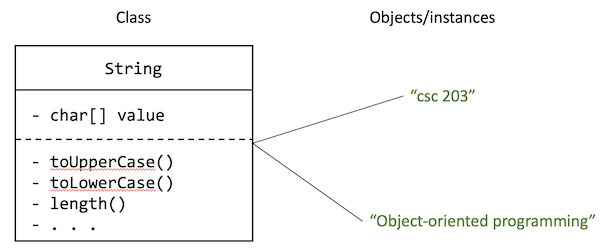

Introduction
This introduction covers some Java language syntax relatively quickly, assuming programming proficiency at the level one would expect after an introductory college programming class.
Data types in Java
Since many of you are likely coming from a Python background, some of this discussion will refer back to commonalities and differences between Java and Python. If you have no Python experiences, that is fine. We do not assume Python knowledge.
We'll work through the JavaSample.java file in this lecture.
Due to some language features in Java, I will sometimes ask you to ignore certain keywords for the time being.
I only do this because I will explain what those mean later when we get to those topics.
By the end of the quarter, there won't be keywords we see in class that I'll ask you to ignore.
Static typing
Java is a statically typed language. What does this mean? It means that before you can run Java code, a compiler checks that variables and values are used in ways that are consistent with their data types.
For example, consider the following expression:
"foobar" / 10
It attempts to divide the text "foobar" by the number 10, which is a meaningless operation.
The above expression would result in errors in statically-typed languages (like Java) as well as in dynamically-typed languages (like Python).
But exactly when those errors occur is different between the two languages.
In a dynamically-typed language like Python, the program would begin to run, encounter the expression above, and then crash with an error message. That is, the error appears at run time.
In a statically-typed language like Java, before the program runs, the compiler checks the program for erroneous uses of values like we see above. If the compiler finds any errors, you must fix them before you're able to run the program.
If the code has type errors like this, the code will not execute at all.
A statically-typed language like Java helps us catch these errors at compile time instead of at run time. There is ongoing debate about whether statically-typed languages are better than dynamically-typed languages, and also what "better" means.
Proponents of statically-typed languages argue that programming is less error-prone with static typing, particularly in large codebases or in codebases where the developer is unfamiliar with the code (i.e., they didn't write it themselves).
Proponents of dynamically-typed languages argue that programming becomes less verbose and more flexible, and that a good test suite can catch most of the type-related errors that a compiler would flag.1
Declaring and initialising variables
You may already know what it means to declare and initialise variables using whatever language you're coming from, but we will revisit this vocabulary briefly.
- When you declare a variable, you are creating it, i.e., you are saying that there is now a variable with the given name.
- When you initialise a variable, you are giving that variable an initial value.
- When you assign a value to a variable, you are giving it a value, potentially replacing its previous value.
When you declare a variable in Java, you must also say what its data type is.
A data type defines two things:
- A set of allowed values
- A set of allowed operations on those values
For example:
int z;
The variable z above can now only hold integer values.
Its set of allowed values are all the integers (up to certain minimum and maximum values).
Its type also dictates that we can only perform "integer-friendly" operations using its value, like math operations or printing.
We can't do things like turn it to "upper case", because that doesn't make sense for an integer.
z = "this isn't a number!"; // this code will not compile
z = 10; // this will be fine
You can also declare and initialize a variable in the same line (and will usually do this).
int z = 10;
int y = -12;
z = 12; // you can update z's value
Primitive types and reference types
There are eight basic or primitive data types in Java:
| Data type | Description | Allowed values |
|---|---|---|
byte | A 1-byte integer. We will not use this type in this course. | -128 to 127 (inclusive) |
short | A 2-byte integer. Use this when you are working in limited memory environments and or you aren't working with huge numbers. | -32,768 to 32,767 (inclusive) |
int | A 4-byte integer. An integer literal (e.g., directly typing 12 or 4305) will default to using the int type. | $$-2^{31}$$ to $$2^{31}-1$$ (inclusive) |
long | An 8-byte integer. Use this when you need larger numbers than int can support.An an L after a number to indicate that you mean for it to be a long, i.e., 256L will be a long value and not an int value. | $$-2^{63}$$ to $$2^{63}-1$$ (inclusive) |
float | A 4-byte floating point number. To indicate that a decimal value is a float, add an F after it, i.e., 12.5F. | Beyond the scope of this course. |
double | An 8-byte floating point number. Simply using a decimal value (e.g, 12.5) will default to using the double type. | Beyond the scope of this course. |
boolean | Track true/false conditions. | true or false |
char | A single 2-byte character. For example, 'A' or '#' (single-quotes must be used). | \u0000 (or 0) to \uffff (or 65535) |
There are also reference types, for example the String type.
Reference types are abstractions created for programming convenience. They are built using primitive types or other reference types as building blocks.
The most commonly used reference type in Java is the String type.
It stores text.
The String type "strings together" a bunch of characters to make a longer piece of text.
You can declare and initialise a String variable like below.
Notice the double-quotes!
In Java, single-quotes are reserved for the char type. You must use double-quotes for Strings.
String course = "CSC 203";
The "value" of a variable that is declared as a reference type is a reference to the data stored somewhere in memory. Hence the name. You can have multiple references to the same data.
Consider the following code:
String course = "CSC 203";
String courseAgain = course;
When the program runs, you have now a course variable that points to the value "CSC 203", and another variable courseAgain that points to the same value.
flowchart LR
course --> v["CSC 203"]
courseAgain --> v
Reference types and equality
There are implications to this.
Consider the == operator ("double equals").
For the 8 primitive types mentioned above, the behaviour of the == operator is pretty much what you'd expect.
int a = 10;
int b = 12;
System.out.println(a == b); // This will print false.
System.out.println(a == 10); // This will print true.
char theLetterA = 'a';
char theLetterAAgain = 'a';
System.out.println(theLetterA == theLetterAAgain); // This will print true.
However, for reference types, this operator's behaviour differs between Java and Python.
For reference types, the == operator checks whether the two operands are the same (as in, physically the same item in memory), and not whether they are equal according to some logical rule for equality.
Example. Suppose we have two Point objects, representing points in 2-dimensional space.
(We will talk more about Points later—those details are less relevant for this example.)
In the example below, we use the new keyword to create two new Point objects.
Point p1 = new Point(1, 2); // A point at coordinates (1, 2).
Point p2 = new Point(1, 2); // Another point at coordinates (1, 2).
Here is a figure depicting the above situation:
flowchart LR p1 --> v1["(1, 2)"] p2 --> v2["(1, 2)"]
PONDER
What would the expression
p1 == p2result in?trueorfalse?
Answer
The answer is `false`, because the `==` operator checks *sameness*, not *equality*. Because `p1` and `p2` are *reference types*, each of those variables is pointing to a different location in memory.Now, you and me and everyone else understands that if two points have the same x and y coordinates, they should probably be considered equal.
That is why all reference types provide an equals function, which checks equality (using some logical definition of equality) rather than sameness.
We can use it as follows:
Point p1 = new Point(1, 2);
Point p2 = new Point(1, 2);
Point p1Again = p1; // p1Again and p1 are both pointing to the same Point.
Here's a figure depicting the above situation:
flowchart LR p1 --> v1["(1, 2)"] p2 --> v2["(1, 2)"] p1Again --> v1
PONDER
Considering the variable assignments above, what do you think would be the values of the following expressions?
p1 == p2p1 == p1Againp1.equals(p2)
Consider the expressions above and check your answers below.
Answers
p1 == p2isfalse, becausep1andp2are not pointing to the same object.p1 == p1Againistrue, becausep1andp1Againare pointing to the same object.p1.equals(p2)istrue, becausep1andp2are logically equal objects (they have equalxandycoordinates)
String equality
Strings are special type of reference type.
They are so commonly used that Java provides a specialized syntax for creating a new String without using the new keyword.
String make = "Santa Cruz";
String model = "Bronson";
Since they are reference types, you should compare Strings for equality using the equals function, and not the == operator.
However, the Java compiler is smart enough to SOMETIMES recognise when multiple String variables hold the same String value.
It will therefore intern or cache the String value.
Each additional String variable with the same value will point to the same String in memory.
This means that, sometimes, the equals function and the == operator will have similar behaviour for Strings, even though String is a reference type.
String csc203 = "CSC 203";
String csc203Again = "CSC 203";
System.out.println(csc203.equals(csc203Again)); // This will print true, as expected.
System.out.println(csc203 == csc203Again); // This will also print true.
However, this is a compiler optimisation, and you should not rely upon it.
You can't predict when == and equals will behave the same for Strings, so you should still use equals to compare Strings for equality.
Arrays
To store a collection of items in Java, the simplest collection you can use is an array. Two things are important to know about arrays:
- Their types are fixed. You can't mix types in an array.
- Their sizes are fixed. An array can't grow or shrink after its initial creation.
Here is how to declare and initialize an integer array with some data:
int[] scores = {83, 43, 77, 92, 73, 95, 81, 42};
Arrays are 0-indexed, which means that the first item in the array is at position 0, the second is at position 1, etc.
You can use box brackets ([ and ]) to index into an array, i.e., access a particular position in an array.
You can use this syntax to read data from an array, or write data to the array.
int[] scores = {83, 43, 77, 92, 73, 95, 81, 42};
// Reading data
System.out.println(scores[0]); // This will print the value 83
System.out.println(scores[7]); // This will print the value 42
// Writing data
System.out.println(scores[1]); // This will print the value 43.
scores[1] = 37;
System.out.println(scores[1]); // This will now print 37.
If you try to look at a position that's beyond the bounds of the array's size, your program will crash (i.e., there will be an error at run time).
int[] scores = {83, 42, 77, 92, 73, 95, 81, 42};
System.out.println(scores[11]); // There is no position 11. This program will crash.
Remember that arrays sizes are fixed! You can't grow the array beyond its initial size.
int[] scores = {83, 42, 77, 92, 73, 95, 81, 42};
scores[8] = 78; // There is no position 8. This program will crash.
Similar to variables, you can also declare an array without initializing it.
int[] scores; // without initialization
You can also declare an array and fix its size, but not specify its contents.
int[] scores = new int[4]; // A new array of size 4
The above line created an array scores of size 4. But we didn't specify the contents of this array.
However, the array is not "empty"—there is no such thing as an empty array in Java.
When you create an array, you're allocating that amount of contiguous space for its contents. So, whether or not you declare the contents of the array, that space is allocated.
What's sitting in that space?
Default values
Java has sort of "placeholder" values for all data types. They are referred to as their default values. So if you create an array but don't declare its contents, Java places the default values for that type in the array.
Here are the default values for all the primitive types:
| Data type | Default value |
|---|---|
byte | 0 |
short | 0 |
int | 0 |
long | 0L |
float | 0.0F |
double | 0.0 |
boolean | false |
char | \u000 (or 0) |
All reference types like String or Point or others we learn about have the same default value.
It is a special value in Java called null.
When a variable's "value" is null, it means that the variable is "pointing to nothing".
Control flow
Conditionals
Java uses if, else if, and else for conditional logic.
Unlike Python, Java does not use indentation to denote scope. We use curly braces to denote what happens inside each clause of the "if-else ladder" below.
However, you should still use appropriate indentation to improve readability.
Point p1 = new Point(1, 2);
Point p2 = new Point(1, 2);
if (p1 == p2) {
// The above condition is false, so this line will not execute.
System.out.println("Condition 1");
} else if (p1 == new Point(1, 2)) {
// The above condition is also false, so this line will not execute, either.
System.out.println("Condition 2");
} else {
// This is the "otherwise" clause.
System.out.println("Condition 3");
}
Repetition ("looping")
There are 4 looping constructs in Java.
In most cases, any looping construct can be used to perform any task involving repetition. But the different types of loops are provided as "syntactic sugar"—each loop type is "nicer" (more intuitive, less error-prone, etc.) to use for some tasks than others.
The for loop
Use this when you want to do something repeatedly a certain number of times.
The for loop has 3 main pieces:
- The counter variable:
int i = 0in the example below. This statement runs once before the entire loop. - The looping condition:
i < 10in the example below. The loop will keep repeating as long as this condition istrue. - The counting step:
i++in the example below. This is shorthand fori = i + 1. This statement runs after each iteration of the loop.
for (int i = 0; i < 5; i++) {
System.out.println(i);
}
The code above will print
0
1
2
3
4
You can use the for loop to step through (or iterate over) an array.
int[] scores = {83, 43, 77, 92, 73, 95, 81, 42};
for (int i = 0; i < scores.length; i++) {
System.out.println(scores[i]);
}
Because i runs through the values 0 through 7, we can use i to access elements from the scores array.
The code above would print
83
43
77
92
73
95
81
42
There is a lot of "surface area" for potential errors in these kinds of loops.
For example, you could mess up the starting value of i (should it be 0 or 1?) or the looping condition (should it be i < scores.length, i <= scores.length?).
So for iteration, we use another looping construct: the for-each loop.
The for-each loop
The for-each loop takes care of the details of stepping through a collection for us.
int[] scores = {83, 43, 77, 92, 73, 95, 81, 42};
for (int item : scores) {
System.out.println(item);
}
In the loop above, the item variable steps through the scores array and updates in each step, stopping when you run out of items.
You can read the loop above as "for each item in scores".
It'll print:
83
43
77
92
73
95
81
42
The while loop
The "simplest" kind of loop. It simply keeps on running as long as the given condition is true.
You typically use this loop when you don't know how many times the loop is going to run beforehand. For example, if you are reading lines from a file, and you want to keep reading it line-by-line as long as there are more lines to be read.
while (fileStillHasLines) {
// Get the next line. Assume this function exists for this example.
String line = nextLine();
System.out.println(line);
}
It's important to know that the looping condition will eventually be false, otherwise your code will go into an infinite loop and the program will never progress or end.
This is useful when you want to perform an action 0-to-many times, depending on some condition.
The do-while loop
This loop functions just like the while loop, except for one difference.
The while loop checks the looping condition before each iteration.
The do-while loop checks the looping condition after each iteration.
do {
// Suppose, for example, our file is guaranteed to have at least one line.
String line = nextLine();
System.out.println(line);
} while (fileStillHasLines);
This can be a useful loop to use in cases where you want to perform an action at least once, and then repeat based on some condition.
-
You can think of the compiler as a type of limited test suite. Instead of checking functional correctness, it checks for syntax and, in statically-typed languages, type-related correctness. ↩
Arithmetic and testing
This brief lesson is about arithmetic in Java. In the previous lesson, we learned the different primitive data types in Java, including the numerical data types
short,int,long,float, anddouble.
In this lesson we'll establish some rules of evaluation for expressions involving these types.
By expression, I mean anything that evaluates to a value. For example 3 + 5 is an expression that evaluates to the value 8. "why are you yelling".toUpperCase() is an expression that evaluates to the value "WHY ARE YOU YELLING".
Arithmetic operators
Ok, so. Arithmetic. We already know a few arithmetic operators:
+for addition-for subtraction*for multiplication/for division%for modulo division (to obtain the remainder from a division operation)
All of these are binary operators. This means that each operator works on two operands. So in the expression 3 + 5, 3 and 5 are operands, and + is the operator.
Unlike Python, which you learned in CSC 101 and 202, there is no ** (exponentiation) or // (floor division) operator.
The two slashes (//) are reserved for inline comments in Java.
Arithmetic involving operands of the same type
When both operands in a binary expression are of the same type, then the result will also be of that type.
In the examples below, remember from the previous lesson that when you simply use the literal values 5 and 2, Java treats them as the int type (as opposed to the short or long type).
So the expressions below are all using int operands.
int addResult = 5 + 2; // 7
int subResult = 5 - 2; // 3
int multResult = 5 * 2; // 10
int modResult = 5 % 2; // 1
So far so good.
But what if we start playing with division? Consider the expression 5 / 2. If we were in a math class, the answer would be 2.5, which is certainly not an integer.
int divResult = 5 / 2; // What's the value of divResult?
Open up a terminal window and type jshell and hit enter.
This will place you in a Java shell, a place where you can run small Java programs, including testing out individual expressions.
Use jshell to evaluate the expression 5 / 2.
jshell
jshell> 5 / 2
$1 ==> 2
You got the result 2!
However, if we were to divide 5.0 / 2.0, we'd get the expected answer.
jshell> 5.0 / 2.0
$2 ==> 2.5
Remember that 5 / 2 is an int / int expression.
Per our rule above, Java is going to therefore produce an int in return.
A double / double expression, on the other hand, will result in a value of type double.
When the result of an integer division in Java is a fractional number (i.e., it has a decimal point), Java simply omits or truncates everything after the decimal point.
So the value of the expression 5 / 2 is 2.
Note that simply changing the type of our result variable won't help.
double divResult = 5 / 2; // Answer 2.0
Tracing the code above, it does the following:
- Evaluate
5 / 2using the rules we talked about, getting theintresult2. - See that
divResultis declared as adouble, which means it cannot store theintvalue2. - Implicitly convert the result
2into adouble, getting the value2.0, and store that instead.
So how would we get the answer 2.5 by dividing 5 and 2?
Arithmetic involving operands of different types
If you used two different types in an arithmetic expression, the result takes the "more precise" type.
If, instead of dividing two ints, you divided an int and a double, you would get a double in return.
Because at least one operand is using the more precise type, the result will default to that more precise type.
The expression below, 5 / 2.0 is a int / double expression.
So the result will be a double, which is the more precise data type of the two.
double mixedDiv = 5 / 2.0; // Answer: 2.5
The same goes for using the different integer types.
Remember that both int and long are integer data types.
If you add an int and a long (or perform any operation between an int and a long), you'll get a long in return.
This is because the long is the more precise type (it takes up more memory, allowing for a larger range of numbers).
long longAdd = 5 + 8L; // Will get the value 13 as a long
Attempting to store the result above in an int will result in a compiler error.
int add = 5 + 8L; // Error: incompatible types: possible lossy conversion from long to int
And this makes sense. Suppose we evaluated the expression 5 + 2147483647L (5 plus the maximum possible int value). We cannot possibly the store result in an int variable—it's too big!
Type casting
Finally, you can tell your compiler to treat certain values as other types instead of their own types. This is known as type-casting. You are "casting" or converting a specific value into another type.
A type-cast is performed by typing the name of the type you want to convert to in parentheses before the value you want to convert.
int basicInt = 5;
double nowItsADouble = (double) basicInt; // becomes 5.0
You can also lose data this way!
double basicDouble = 5.2;
int nowItsAnInt = (int) basicDouble; // becomes 5; you lost the .2
Type-casting can be used when you have two integer values that you need to divide, but you need a precise result.
int a = 132;
int b = 25;
double result = (double) a / b; // The result is 5.28
Tracing the code above, the following takes place:
- First, the expression
(double) a / bneeds to be evaluated. It is made up of two sub-expressions:(double) aandb. - We evaluate the expression
(double) a. The value ofais132, so applying the type-cast to 132, we get132.0. - The sub-expression
bevaluates to25. - We are now ready to evaluate the overall expression
132.0 / 25, and we get the value5.28.
In the example above, a was cast to a double before performing the division.
So it became a double / int operation, giving a double back as a result.
Type-casting is a unary operation.
Unlike the arithmetic operators we saw earlier, which were binary operators (i.e., they applied to 2 operands), type-casting is a unary operator. It applies to only one operand.
The type-cast will be applied to the value on the right of the type-cast operator (i.e., the data type you want to convert to).
Consider the following expressions and the steps involved in evaluating them:
-
(double) 132 / 25- The steps of evaluation are described above
-
(double) (132 / 25)- Here, because we've enclosed the division expression in parentheses, it takes precedence.
(132 / 25)is evaluated first. - So as an intermediate expression we get
(double) (5). Can you think why this is? - The final value of the expression above will then be
5.0, because the type-cast was applied to the value5.
- Here, because we've enclosed the division expression in parentheses, it takes precedence.
Finally, type-casting applies only to values, not to variables.
Since Java is a statically-typed language, you can never change the data type of a variable. You can only change the type of a value for use in a particular statement or expression.
Consider the same example from above.
int a = 132;
int b = 25;
double result = (double) a / b;
In the code above, the type-cast only applies to the value 132 within the expression. The data type of a has not changed, and future uses of a will still evaluate to 132, not 132.0.
Lists, maps, and existing classes
In this lecture we will get a first look at Classes and objects in Java. Following this we'll look at some classes that are available in the Java standard library, specifically Lists and Maps.
Objects and classes
A class is the blueprint that defines data each object has and what behaviours it can perform. You can create many individual objects using the same class. These objects are called instances of the class.
Objects are "boxes" of related pieces of data and behaviours that use those bits of data.
For example, consider the String class in Java.
If you follow that link, you'll see a lot of comments and other things that will look unfamiliar (at least for these first few weeks).
But fundamentally, the String class defines the following
- All
Strings have an array of characters (data). - All
Strings have a bunch of actions they can perform using that array of characters (behaviours). For example, they can turn the characters to upper case or lower case, search the array for a specific sub-string of characters, or remove and replace specific characters with other ones.
The String class, by defining the data and behaviours like the above, allows us to create String objects, each of which has its own array of characters, and its own behaviours it can perform using its array of characters.
In the figure below, the (super-simplified) String class defines the data (value) and behaviours that all Strings should have.
Then we used that class to create two instances of String, i.e., two objects.
Each of those objects have their own bit of data called value (in this case, an array of characters), and can perform actions using that value.

See the example in code:
String firstString = "csc 203";
String secondString = "Object-oriented Programming";
The two variables firstString and secondString are both made out of the same String class, but they are two different objects, i.e., two distinct instances of the String class.
Instance methods
We can tell the objects to perform certain actions. This can be done by using the dot operator (.) and saying the name of the action we want to take.
String firstString = "csc 203";
String secondString = "Object-oriented Programming";
String firstUpperCased = firstString.toUpperCase();
After the code above runs, the firstUpperCased variable will have the value "CSC 203", because the toUpperCase action gives back the value of the String with its characters in upper-case.
These actions can each object can perform are called instance methods.
Instance methods act on particular objects, or instances of the class.
Notice that the expression firstString.toUpperCase() is totally unaffected by the value of secondString.
Hence the name.
What do you think would be the value of the following expressions?
secondString.toUpperCase()firstString.toUpperCase().toLowerCase()
A code example
Consider the following class definition. It defines a class that holds data representing a cohort of CS students, and some behaviours that each cohort object can perform using its own data.
Take some time to study the code below and its accompanying annotations.
Encapsulation, or information hiding
Consider the getYear, setYear, getEnrolled, getRetainedPercent, setRetainedPercent methods above.
They don't do much beyond getting or setting the values of the appropriate variables.
These are called getter methods (or accessors) and setter methods (or mutators).
Because they are marked as public methods, they are visible to other classes, which means other classes can get or set the cohort's year and so on.
This should raise the question: why did we make the year (and other instance variables) private if we were going to expose access to those variables via public instance methods?
The answer is encapsulation. When we make our instance variables private, we hide them from the outside world. We gain the following benefits:
- We can prevent mutations for some variables. For example, notice that
enrolleddoes not have a setter method. We simply do not allow other classes to ever modify theenrolledvalue, which we could not have done if it waspublic. - We can control mutations for some variables. In the
setRetainedPercentmethod, we are able to perform some validity checks before accepting a new value for the retained percent. Specifically, because this is a percentage, we check that the input value is within the range 0–1. - Finally, we decouple our class from other classes. By hiding these bits of information (as opposed to giving unfettered access to the internals of how our
CsCohortworks), we reduce the potential for coupling between ourCsCohortclass and other classes in our program.
What's coupling? If classes are tightly coupled, they have to change together. Each time one of the classes changes, it will force changes in other classes to accommodate the changes in the first class. When classes are loosely coupled, they are mostly independent. This does not mean they don't work together to make things happen; it just means that internals of the either of the classes can change without the other ever knowing about it.
Encapsulation helps with this. By defaulting to making our instance variables private, we get a lot more control over the functionality that CsCohort presents to other classes.
Using existing classes in Java
Using the class that we just created
We can create new instances of the CsCohort class like so:
CsCohort year1 = new CsCohort(2012, 132, .932);
CsCohort year2 = new CsCohort(2013, 172, .924);
CsCohort year3 = new CsCohort(2014, 157, .936);
CsCohort year4 = new CsCohort(2015, 172, .977);
Each of the variables above points to a different object. Each object has its own data and its own behaviours that operate on that data.
Remember the Java memory model.
Each of those CsCohort variables (year1, year2, year3, year4) are pointing to the objects sitting somewhere else in memory.
Using other existing classes: Lists
Now that we know what classes, objects, and instance methods are, let's look at some existing classes that are provided by the Java standard library.
We have already seen one super commonly used class: the String class, which can reasonably be thought of as a data structure whose job it is to store and manipulate sequences of characters.
In the rest of this lesson, we'll talk about other data structures, specifically lists and maps.
Lists
To talk about lists, we first need to talk about arrays.
Recall from the first lesson that arrays are the most basic type of collection in Java. Its key difference from the lists you might be used to from Python is that arrays have fixed sizes and fixed types.
The fixed type is due to Java's static type system and fondness for (some degree of) type safety. That won't change.
However, we often do not know upfront how big we're going to need a sequence of data to be. Arrays can be limiting in that regard.
So the Java standard library provides a couple of list implementations that we can use.
ArrayLists
The ArrayList class is provided in the Java Standard library. It is, essentially, a resizable array implementation. This means you can dynamically grow and shrink the size of the list by adding items to it or removing items from it.
See the CompareCohorts class below for examples about how to create and use ArrayLists.
Why would we want to use an ArrayList instead of a regular old array? Easy. Its size can be dynamically changed, which makes it much more flexible.
How does it work? An ArrayList works by keeping track of an array behind the scenes. We call this the backing array. So suppose we declare and initialize an empty ArrayList.
According to the documentation, Java by default creates a backing array of size 10, even though we haven't added anything to the list as yet.
For example, we declare the ArrayList:
ArrayList<String> list = new ArrayList<>();
And this is our backing array to begin with:
| \ | \ | \ | \ | \ | \ | \ | \ | \ | \ |
|---|
Suppose we add ten items to the list.
for (int i = 0: i < 10; i++) {
list.add(i);
}
Our list's backing array now looks like this:
| 0 | 1 | 2 | 3 | 4 | 5 | 6 | 7 | 8 | 9 |
|---|
What happens when we add an 11th item? In a regular array, that wouldn't be possible. But an ArrayList allows us to do this. Here's how.
When the backing array becomes full, the ArrayList does the following:
- It creates a new backing array that's double the size of the previous one.
- It transfers all the existing content from the old backing array into the new backing array.
- It then adds the new item that we tried to add, that triggered this process in the first place.
The backing array is full, and we want to add the number 10 to the ArrayList.
| 0 | 1 | 2 | 3 | 4 | 5 | 6 | 7 | 8 | 9 |
|---|
We create a new backing array that's double the size of the old one.
| \ | \ | \ | \ | \ | \ | \ | \ | \ | \ | \ | \ | \ | \ | \ | \ | \ | \ | \ |
|---|
We copy the old contents into the new backing array.
| 0 | 1 | 2 | 3 | 4 | 5 | 6 | 7 | 8 | 9 | \ | \ | \ | \ | \ | \ | \ | \ | \ | \ |
|---|
Finally, we add the newest bit of data to the backing array.
| 0 | 1 | 2 | 3 | 4 | 5 | 6 | 7 | 8 | 9 | 10 | \ | \ | \ | \ | \ | \ | \ | \ | \ |
|---|
The ArrayList abstracts away all of these gory details, allowing us to deal with the list as simply a dynamically sizeable linear sequence of data.
Because the backing data structure is an array, the ArrayList lets us access any arbitrary item in the list in constant time (\( \theta(1) \)), i.e., it takes the same amount of time no matter how large the list is.
However, this comes with a cost: removing or adding items to the list can take linear time (\( \theta(n) \)) in the worst case, because all items in the backing might need to be shifted left (after removals) or right (before additions).
LinkedLists
The other type of list that Java provides is the LinkedList. We won't belabour the point here, since you likely studied LinkedLists in the previous class.
Unlike the ArrayList, the LinkedList is made up of a sequence of objects connected ("linked") by pointers.
Each item points to the next item, forming a chain of items, i.e., the linked list.
The LinkedList is used very similarly:
LinkedList<String> list = new LinkedList<>();
It even has mostly the same methods as the ArrayList:
- You can append items to the end of the list using
add. - You can remove items from specified locations using
remove(i)(whereiis an index number). - You can get the
sizeof the list, i.e., the number of items in the list. - You can check if the list contains an item using the
containsmethod. - You can check if the list is empty by using the
isEmptymethod.
So when should you use one vs. the other? Each one is better for certain kinds of tasks. The table below shows their time complexities in the worst case for various tasks.
| Operation | ArrayList | LinkedList |
|---|---|---|
| Random access | \( \theta(1) \) | \( \theta(n) \) |
| Add to end (append) | \( \theta(n) \) | \( \theta(1) \) |
| Add to arbitrary position | \( \theta(n) \) | \( \theta(n) \) to get to the position \( \theta(1) \) to add the item |
| Remove (from a given position) | \( \theta(1) \) to get to the position \( \theta(n) \) to remove the item and shift items in the list as appropriate | \( \theta(n) \) to get to the position \( \theta(1) \) to perform the removal |
| Contains | \( \theta(n) \) | \( \theta(n) \) |
A note about "boxed" primitive types
Creating an ArrayList of integers or floating point values looks like this:
ArrayList<Integer> intList = new ArrayList<>();
What's up with the Integer in the code above? Wasn't the primitive integer type in Java called int?
In Java, all the primitive types have "boxed" versions of those types. I.e., versions in which they masquerade as reference types. That is, you will sometimes see:
shortreferred to asShortintreferred to asIntegerlongreferred to asLongdoublereferred to asDoublefloatreferred to asFloatcharreferred to asCharacterbooleanreferred to asBooleanbytereferred to asByte
Virtually the only use of these "boxed" type names is in data structures like the ArrayList or LinkedList.1
But, since they exist, they also hold some useful utility functions for doing things like parsing Strings into ints, etc.
For example, see some of these on the documentation page for Integer.
So, while code like the following will compile successfully, you will get warnings telling you to use the primitive versions of those type names.
// Do this
int num = 23;
// Not these
int num1 = new Integer(23);
Integer num2 = new Integer(23);
Integer num3 = 23;
Maps
Next, we consider maps. A map in Java is an object that maps keys to values. Each key can map to at most one value, i.e., each key must be unique.
The map is not unlike the dict structure you may be used to in Python.
The commonly used map implementation in Java is the HashMap.
The HashMap creates a pairing from keys to values, and allows fast (constant time) access to values, provided you have the key.
This is useful when you need to quickly access individual records in a very large dataset.
For example, suppose you have a HashMap where the keys are social security numbers (long) and the values are Person objects (assuming we, at some point, created a Person class).
You can initialise the map like so (notice the use of the "boxed" form of Long below):
HashMap<Long, Person> mapOfPeople = new HashMap<>();
You add records into a map using the put method.
mapOfPeople.put(123, new Person("Joe", "Bro"));
mapOfPeople.put(987, new Person("Pooja", "Ahuja"));
Assuming you have the key, you can get the value from map using the get method. If the key does not exist in the map, you will get null in return.
mapOfPeople.get(123); // will return Joe Bro
mapOfPeople.get(987); // will return Pooja Ahuja
mapOfPeople.get(192); // will return null,
If you try to re-enter the same key, the map will replace whatever was there previously with the new item.
mapOfPeople.put(123, new Person("Joe", "Bro"));
mapOfPeople.put(987, new Person("Pooja", "Ahuja"));
// Adding using a duplicate key
// Joe Bro is now replaced by Cody Coderson
mapOfPeople.put(123, new Person("Cody", "Coderson"));
The HashMap provides the following functionality:
put(key, value)get(key)getOrDefault(key, default)— returns the specifieddefaultvalue instead ofnullif thekeyis not in the mapentrySet()— obtains the entire set of entries from the map; this is useful if you need to do things like loop over all the map entriesisEmpty— checks if the map is emptycontainsKey(key)— checks if the map contains the specifiedkey
All of the concepts in this section are demonstrated in the CompareCohorts class below:
-
Or, more generally, in Generic types, which we will get to later this quarter. That is also when we'll talk about why these exist. ↩
Objected-oriented Programming and Procedural Programming
In this lesson, we'll compare and contrast two styles of programming, or programming paradigms: procedural programming and object-oriented programming (the latter being the focus of this course).
After this lesson, you will know about:
- The difference between procedural and object-oriented programs
- Constructors and overloaded constructors
- The difference between
staticmembers and instance members of a class - The meaning and usage of the
thiskeyword in Java
Procedural and object-oriented programming
Procedural programming is a style of programming that focuses on providing a series of instructions to be executed. These would the statements in the program. A procedural program can also bundle up instructions into functions that can be used and re-used as needed. Similarly, data can be bundled up into compound objects, simply for the purposes of packaging up related pieces of information.
Procedural programming was the dominant way of doing things until Object-oriented programming (OOP) was invented in the 70s and 80s. As programming projects started to get larger and more complex, because software was quickly being integrated into many domains, software engineers started to run into problems with software maintainability. In procedural programming, it is easy to get into a "spaghetti code" situation, where you have a large program with tons of functions operating on a number of data structures. The onus is on the programmer to structure the program so that it would be easily readable, testable, and changeable.
One proposed solution was Object-oriented programming (OOP).
In OOP, instead of focusing our program on data and functions that operate on that data, we use objects, which bundle up related data and behaviours that operate on those data into classes.
Orienting our programs around objects (the argument goes) lets us modularise the various parts of a large software system, with each part only reading or affecting its own data. This leads to a number of beneficial effects:
- The amount of global data (data that is shared by multiple objects or parts of a system) is limited. By bundling up data into objects, and tending to make that data
privateby default, the programmers exerts a fair amount of control over who can see what parts of a system. - Because we use
privatedata andpublicfunctions to induce this degree of separation between parts of a system, those parts are decoupled from each other. - Features we will learn later this quarter will show us that this also helps introduce a degree of resilience to change into our programs. Software requirements change often — if we are unable to change our software easily to meet new requirements, we're gonna have a bad time.
Of course, all of the above are hypothetical. It's perfectly possible to gain all of the above benefits using procedural programming, just like it is possible to write terrible, unmaintainable programs using OOP.
In this class, we're going to aim to understand the higher-level principles of good software design, using OOP as a vehicle to put those principles into practice. This does not mean that those principles are unique to OOP.
This is a good time to note a few things!
- There are many conflicting views about both Java and object-oriented programming.
- This course is not meant to evangelise Java or object-oriented programming. It is not the "one true way" to develop maintainable software. But it is one way, and an important one. So it is worth learning.
- There are other programming paradigms, which you will learn and use in other courses and, indeed, later in this course itself.
Ok, let's look at examples! We'll look at the same super-simple program written in each of the two styles.
Procedural programming
Consider the code below.
We have the Pitcher class, which is simply a bundle of data members. You can think of this as more-or-less like a dict in Python, or a struct in C.
The Pitcher class above only has data, and has no behaviours.
Unlike the CsCohort that we looked at in the previous lesson, the Pitcher cannot perform any actions itself, it cannot do anything using its data.
Any behaviours we want to perform must be written as separate functions — those functions will take the Pitcher object as a parameter, and perform actions using the Pitcher's data.
Any behaviours that use the Pitcher's data must be written in separate functions, which will take the Pitcher object as a parameter. Those are written in the PitcherUtil class.
Object-oriented programming
Here is the same program written in an Object-oriented style. Please take some time to read through the annotations within the source code.
"static" data and methods
The code above also introduces the notion of static data.
Here, the word "static" is used slightly differently than in the phrase "statically-typed".
In this context, static means the value belongs to the class, as opposed to individual instance of the class.
So in the example below, since all baseball games are 9 innings long, the INNINGS_PER_GAME variable is marked static, and the value is shared by all Pitcher objects.
PONDER
Why don't we just give each
Pitcherits owninningsPerGameinstance variable and have its value be9for allPitchers?
Just like we can have both static and instance variables, we can also have both static and instance methods.
A static method would define behaviours that don't belong to or apply to any individual Pitcher object.
For example, you might have a static method that takes in a list of Pitcher objects (List<Pitcher>) and computes the average number of runs scored across all those Pitchers.
That is, we could have the following method inside the Pitcher class:
public static double averageRuns(List<Pitcher> pitchers) {
double sum = 0;
for (Pitcher p : pitchers) {
sum = sum + p.runs();
}
if (pitchers.size() != 0) {
return sum / pitchers.size();
} else {
return 0.0;
}
}
PONDER
What would
thisrefer to in the method above?1
Main takeaways regarding static methods.
-
staticmethods are useful when you are writing functions that don't necessarily apply to any individual object, or if the behaviour cannot reasonably be said to be performed by any single object. Sometimes this will be ambiguous, and will come down to your preference. -
If you find yourself writing a
staticmethod whose parameters include a single object of a given type, you should consider whether the method would be better placed as an instance method for that type. The answer will often, but not always, be yes. -
Some folks tend to use
staticas an escape hatch from the Object-oriented paradigm. Sometimes this is appropriate. For example, you just want to write some useful reusable functions that don't necessarily belong to an object in a larger Object-oriented system. The Math class in Java is a great example: it provides a number of useful functions for things like exponentiation, trigonometry, rounding, etc. All of these are written asstaticmethods. Generally useful utility classes like that are one of the only situations in which that would be acceptable. If you find yourself reaching forstaticmethods, you need to re-consider your design (or your programming paradigm).
-
There is no
thisinside astaticmethod, since the method is not being called by any object. It's being called by the class itself. Any reference tothisinside astaticmethod would cause your code to not compile. ↩
Method dispatch (overloading and overriding)
Java has a number of mechanisms in which, when a program calls a method on an object, either the compiler or the runtime must decide which method should be executed for that method invocation. This is known as method dispatch.
Method overloading (static dispatch)
Method overloading allows us to perform the same task (call the same function) in multiple different ways, depending on the inputs that are given (the arguments that are given to the function).
More concretely, it allows the same class to define several methods that have the same name but different parameter lists.
In Java, a method's signature is its name, its parameter list, and any modifiers applied to it, like public or static.
Those first two pieces—the method name and parameter list—together uniquely identify a method within a class.
Within the same class, there can never be more than one method with a given name and parameter list.
However, we can have several methods with the same name, but different parameter lists.
How our program chooses between all of those methods with the same names is a matter of static or dynamic dispatch.
Consider the two classes in the example below: Circle and Reporter.
The Reporter class above contains three static methods called report.1
Each one takes a different list of parameter types.
When we write code to call one of the methods, our toolchain needs to decide which method should get called. This process is called method dispatch.
PONDER
Why do you think they are
staticmethods?1
So, for example, if we were to make the following function call:
Circle circle = new Circle(10);
Reporter.report(circle);
At compile time, the compiler determines which of the report methods best matches the provided input type.
In this case, the argument we've given to the report method is a single Circle object.
The compiler looks at all the report methods and identifies that, yes, there is a report method that expects a single Circle object as an argument.
After the code above is run, the text "Circle: Radius: 10" would be printed out.
If, instead, we called
Reporter.report(23, 2);
The compiler would call the report method that takes two ints as inputs, and print "Two ints: 23 2"
However, if we did something like this...
Circle circle = new Circle(10);
Circle anotherCircle = new Circle(20);
Reporter.report(circle, anotherCircle);
...we would run into a compiler error.
The compiler is unable to resolve the report call above, i.e., it cannot find a matching method in the Reporter class.
Since all of the above happens at compile time, i.e., before we ran the program, this is a form of static dispatch.
Static Type and Dynamic Type
At this point, it's useful to take a little detour.
We've talked about how Java is statically-typed. Take a minute to remind yourself of what it means to be statically-typed. Put simply, it means that the types of variables are pretty much settled at compile time, as opposed to run time.
However, this is not quite the complete picture in Java. In some situations, what the compiler thinks is the type of a variable may not necessarily be the same as what the runtime2 thinks the type is (with some limitations).
But wait! Wasn't using a statically-typed language meant to save us from these ambiguities? How can this be?
First look at inheritance
The Java standard library defines the Object class.
The Object class defines the behaviours that all objects are expected to support.
For example, the Object class defines these instance methods, among others:
equals(Object): boolean— This method checks if the calling object is equal to the specifiedObjecttoString(): String— This method returns a string representation of the object
Every reference type in Java is a child type of Object.
That is, every reference type in Java is an Object, and can perform all of the actions defined in the Object class, even if those methods were not defined for that reference type.
This is due to inheritance. All objects in Java inherit certain behaviours from the Object class, whether or not you, the programmer, explicitly told them to.
So, a String is an Object. A Point is an Object. The CsCohort and Pitcher classes that we created in previous lessons are Objects, even though we didn't explicitly mark them as such.
With that in mind, consider the following assignment statement:
Object whatAmI = new Circle(3);
The type on the left-hand-side of the assignment operator (Object) does not match the type on the right-hand-side ( Circle).
But our compiler is still happy with that assignment statement.
This is because Circle is a subtype of Object, i.e., it can do everything that an Object can do.
Our compiler works this out due to the inheritance relationship between Object and Circle.
So our compiler is totally happy to say "ok, I will treat this variable as an Object, because I know it can do Object things".
So:
- The compiler sees the variable
whatAmIas anObject. This is known as the variable's static type. - The runtime sees the variable
whatAmIas aCircle. This is known as the variable's dynamic type.
I'll say that again, because that's important: the variable is treated slightly differently by the compiler and the runtime.
As far as the compiler knows, it's an Object, but the actual thing that is stored in memory is a Circle.
If, instead, we did...
Circle circ = new Circle(3);
...then we have no differences. The static type and the dynamic type of the variable are the same.
As a counterexample, consider the following.
// This will break!
Circle whatAmI = new Object();
The line above would not compile, because we are declaring whatAmI to be a Circle, but then we're giving it an Object as a value.
That is, we're saying we want to make the variable do Circle actions (like, say, computing its area).
But in actuality, at runtime, the variable is an Object, which cannot compute an area — it doesn't even have a radius!
Our compiler is able to work out this incongruence, because it understands the direction of the relationship between Circle and Object; all Circles are Objects, but not all Objects are Circles.
Back to method dispatch
All right, with that background, let's get back to method overloading.
In the Reporter example, we have the following two report functions:
- One that takes in a
Circleas a parameter. - One that takes in an
Objectas a parameter.
Let's look at some function calls with different inputs.
Example 1
Circle circle = new Circle(3);
Reporter.report(circle);
- The input's static type is
Circle. - The input's dynamic type is
Circle.
What will be printed? Based on the static type of the variable, the compiler will decide which function should be called. In this case, it will decide on the Reporter.report(Circle) function, because the static type of the input is Circle.
So the printed output will be: "Circle: Radius: 3"
Example 2
Object obj = new Object();
Reporter.report(obj);
- The input's static type is
Object. - The input's dynamic type is
Object.
What will be printed? The compiler will choose the Reporter.report(Object) function, because the static type of the input is Object.
So the printed output will be something like: "Object: Object@324618"3
Example 3
Object circ = new Circle(3);
Reporter.report(circ);
- The input's static type is
Object. - The input's dynamic type is
Circle.
What will be printed? The compiler will choose the Reporter.report(Object) function, because the static type of the input is Object.
However, the dynamic type is still Circle. That is, even if the compiler thinks it's an Object, the object that's sitting memory is still a Circle.
So we get the following output:
"Object: Radius: 3"
Let's think about how we got that, step by step:
- When we say the object in memory is a
Circle, we are referring to the data held by aCircle(radius) and behaviours theCirclecan perform (computing the area usinggetArea, or getting a string representation of the object usingtoString). - So when the print statement in the
reportfunction implicitly calls thetoStringmethod, the following two things happen:- The compiler checks if the static type (
Object) has an instance method calledtoString. It does (see earlier in this lesson). If it didn't the code would not compile, and we wouldn't be able to run it at all. And this is a good check, because if theObjecthas atoString, we know that theCirclemust also have atoString, because of their inheritance relationship. - The runtime needs to decide which
toStringmethod to call. We know that there is one in theObjectclass, and we have one in theCircleclass. Just like before, we have to choose one, i.e., we have to go through the process of method dispatch. Since the dispatch is now occurring at run time, it is known as dynamic dispatch. - In this case, since the object is a
Circleat run time, we choose theCircle'stoStringmethod. And we print theRadius: 3message.
- The compiler checks if the static type (
Putting all of that together, we get the output: "Object: Radius: 3"
The "Object" in the string above came from the static dispatch, i.e., the choice of which report method to call. The "Radius: 3" came from the dynamic dispatch, i.e., the choice of which toString method to call.
Example 4
Let's consider a final example. Suppose, for a moment, that the report(Circle) method did not exist in Reporter. If you are following along with the code on your own machine, go ahead and delete or comment out that method now.
And suppose we did the following:
Circle circ = new Circle(3);
Reporter.report(circ);
Now, our compiler cannot find a report method that takes a Circle as a parameter, because in this example it doesn't exist.
So the compiler will now "look upward", and instead look for a method that takes as its parameter a parent class of Circle (i.e., Object).
So the example above would compile, and it would print out "Object: Circle@eb2857" (or something similar).3
Main takeway with method overloading/static dispatch.
When a method has many overloads, the compiler checks the following rules, in this order, to determine which method should be called based on the arguments that are provided.
- First, it looks for a method whose parameter type is an exact match with the input's static type.
- If that is not successful, it looks for a method whose parameter has the closest "is a" relationship with the given input's static type. In Example 4 above, a
Circleis anObject, so the compiler would resolve to callingreport(Object)ifreport(Circle)was not present. - If neither of the above resolves to a method, the compiler checks if the static type of the input can be implicitly converted to the expected parameter type for the method. For example, if the method takes in a
doubleas a parameter, and we attempt to call it with anintas a parameter, the compiler will implicitly convert thatintinto adoubleand call thedoublemethod instead.
Method overriding (dynamic dispatch)
Closely related to method overloading is the confusingly similarly named method overriding.
When a superclass (parent class) defines a behaviour and the subclass (child class) does not, the subclass inherits that behaviour from the superclass.
For example, if we did not write a toString method in our Circle class, it would have inherited the Object toString behaviour instead.
Method overriding is when a method in a subclass has the same name and parameter list as a method in the superclass. The effect of this is that the subclass's method overrides the superclass's method, thus replacing the superclass's behaviour that the subclass would otherwise inherit.
Example 5
Let's illustrate this with an example.
Continuing with our running example, suppose we had not written a toString method in the Circle class.
The Circle class would then inherit the toString behaviour from the Object class.
If we did not want the Object's toString behaviour, we need to override it, by writing our own toString class in Circle.
Here are the two classes again for the sake of convenience.
For this example, Circle has no toString method.
// Reporter.java
public class Reporter {
public static void report(Object obj) {
System.out.println("Object: " + obj);
}
public static void report(int x, int y) {
System.out.println("Two ints: " + x + " " + y);
}
}
// Circle.java
public class Circle {
private final double radius;
public Circle(double radius) {
this.radius = radius;
}
// This time with no toString method
}
Suppose we run the following code:
Object obj = new Circle(3);
Reporter.report(obj);
- The input's static type is
Object. - The input's dynamic type is
Circle.
The following will take place:
First, the compiler will look for a report function that takes an Object parameter. All good so far.
Next, within the report function, we reach the print statement.
Inside that print statement, obj.toString() is implicitly called.
Next, we should remember that, at runtime, obj is a Circle, because that was the dynamic type of our original input.
But Circle has no toString method now.
So what happens?
This is where the inheritance relationship between Circle and Object comes into play.
When the runtime fails to find a toString method in the Circle object, it will "search upward", checking the ancestors of Circle—in this case, Object.
So, what we will see printed is:
"Circle: Object@eb78402" (or something similar).3
If we were to give Circle a toString method of its own (as in the very first code snippets in this lesson), we would replace the "default" toString behaviour of all Objects with a specific toString method for Circles.
This process is known as method overriding.
-
Since there is no instance data, we don't really have a notion of individual
Reporterobjects. So we could make them instance methods, but that's not really useful right now. ↩ ↩2 -
You will see me write both "run time" (as two words), and "runtime" (as one word). When I write "run time" (as two words), I mean it as at run time, as in "while the program is running". When I write "runtime" (as one word), I mean the program execution environment. In most cases these are closely related. ↩
-
The
Objectclass'stoStringmethod is not terribly useful—it simply prints theObject's location in memory. I've put in some random numbers here as a memory address — yours will differ if you run this code. ↩ ↩2 ↩3
A class design process
In this lesson we'll implement a simple game using an object-oriented (OO) design process. The goal is to get a tiny taste of the thought process that goes into designing an OO system with multiple interacting classes.
Overview
We're going to implement the Game of Nim. Lets start by first understanding the game we're building. The rules are simple:
- There are two players.
- There is a pile of sticks. We can let the players decide how many sticks should be in the pile to begin with.
- The players take turns removing 1–3 sticks from the pile. Each turn must involve at least 1 stick being removed from the pile.
- The player that removes the last stick from the pile loses.
We're going to build this as a text-based game. Here is how an example game might go:
Player 1's name? Yaa
Player 2's name? Michael
How many sticks? 5
Yaa, how many sticks do you want to take? 2
Yaa takes 2 stick(s).
There are 3 left in the pile.
Michael, how many sticks do you want to take? 1
Michael takes 1 stick(s).
There are 2 left in the pile.
Yaa, how many sticks do you want to take? 1
Yaa takes 1 stick(s).
There are 1 left in the pile.
Michael, how many sticks do you want to take? 1
Michael takes 1 stick(s).
There are 0 left in the pile.
Yaa is the winner
Why follow a principled design process?
Before we proceed, I want to acknowledge that the requirements, as described above, are fairly simple. You could probably write the whole game in a couple hundred lines in a single file.
That is fine: we're still going to use an OO process to design and implement this game. Remember, our goal is to learn to follow a principled design process when we engineer software. OO design is one such process to help us write maintainable code.
But it's worth questioning: what do we actually mean by that? When I say we should prioritise maintainability, I'm thinking of the following:
Requirements change over time. Software requirements rarely stay the same. Either because the client (the person for whom we're building the software) refines what they're asking for, or because new features need to be added, or because we, the developers, are correcting initial misunderstandings about aspects of the requirements, change is a constant in software engineering.
There will be bugs. It's likely that you'll need to debug your program at some point. Decoupling the different modules involved in the overall game implementation will help to quickly isolate issues as well as the changes needed to resolve them. This is related to the previous point. If you are making changes all over your codebase to support every new feature or bug-fix or what have you, your likelihood of introducing more bugs increases significantly. The more interactions there are between the different modules involved, the larger the "search space" grows when you are trying to hunt down a bug.
Testing. Finally, you want to be able to test the distinct parts of your program to verify that they are working correctly, both individually and together. "Spaghetti code" is much harder to test than smaller cohesive modules, in part because it becomes difficult to even tell what a "distinct part" of the program is.
All that to say: it pays to follow a principled software design process. That is, we want to write loosely coupled, tightly cohesive components (where "components" can mean functions, classes, packages, etc.; I use "component" as a general term to emphasise that these principles are not unique to OOP).
- Loose coupling: Components can work together harmoniously, but are not dependent on each others' implementation details. If one component needs to change how it works, that should not beget changes in other components, or at least should minimise them.
- Tight cohesion: The above goal can be realised by writing components that do one thing. What that "one thing" is is dependent on the problem at hand. For example, we might have a component whose job it is to manage the user interface for the game (whether it is text-based or graphical) and a component whose job it is to manage the game logic.
Detour: A small but important real-world example
Consider the String class in Java.
We casually think of a String as being a "string of characters".
This is how the String used to be implemented in older versions of Java in years past.
For example, the Java 8 String implementation, used around 2014, has a value instance variable declared as a char[].
However, the char data type can represent a large but limited set of possible characters in its two bytes of memory (the UTF-16 encoding1).
At some point, the Java standard library made the switch to where the value of a String is now represented by a much less restricted array of bytes instead.
See the current String implementation.
Importantly, the value instance variable is marked as private, meaning that other code that used Strings did not have direct access to this value, and therefore could not rely on it being a char[].
The maintainers were able to change this to be a byte[] with little fuss (that I'm aware of), because the "public-facing" surface of the String class remained the same as far as any outsiders were concerned.
They were decoupled from the String class.
That said, the String class does provide the toCharArray method, which still gives back a char[].
Code that uses that method to obtain access to the underlying array of characters could possibly break if the String contained characters outside the UTF-16 encoding (e.g., emojis).
This should serve as a warning that you should carefully think about whether or not you should provide accessor methods for your private instance variables.
Many Java developers do it as an automatic step when creating new classes, but that defeats some of the purpose of information hiding.
Designing the classes needed for the game
I find it useful to ask a series of questions to help me understand what it is I'm building.
What data do we need to keep track of to run this game? To what entities do those pieces of data belong? For what behaviours (functionality) is each entity responsible?
- For starters, we have the Players. Based on the recorded game output at the beginning of this lesson, what data do you think a
Playershould hold? What behaviours do you think aPlayershould be able to perform? For example, thePlayerought to have aname, since that is what is used in the text-based output. ThePlayershould also be able to remove a specified number of sticks from the pile. Leading us to... - The pile of sticks. What are the data and behaviours here? The
Pileshould, at the very least, be able to keep track of how manysticksare left in it. It's also probably a good idea to prevent the removal of too many or too few sticks. - Finally, we have the game itself. This is sort of the "controller" of this whole thing. What data does the
Gameknow about? It needs to know about thePlayers who are playing the game, and thePilethey are playing with. It also needs to manage the game logic, i.e., setting up the game, letting the players go turn-by-turn, and checking for a winner after each turn.
PONDER
In the game rules, a player must remove 1–3 sticks from the pile. This means we must not allow player turns in which the player tries to remove
< 1stick or> 3sticks. Should this check be done by thePile, thePlayer, or theGame? Why?
In this text based game, thePlayermight enter text that cannot be parsed into anintwhile choosing the number of sticks they want to pick up. How should this be handled? Whose job is it to handle it?
We will discuss the above together as a class. That discussion should ideally give us an idea of what classes should exist in our system, and roughly what each of them should be responsible for.
Here is one possible implementation of the game — we may come up with something different in class, or you may come up with something different on your own. That is fine.
The Player class
The Pile class
The Game class
The Game class is our "controller" — it sits above and in-between the Player and Pile classes, managing and mediating those classes' communications with each other.
That is, the Game prompts the Player to see how many sticks they want to pick up, and sends that input to the Pile. The Pile acts on this information, updating its number of sticks accordingly. The Game then inspects the Pile to see if the game is over or not (by using the Pile's getter method).
Supporting additional features
As we've said before, a central theme in software engineering is that your requirements can change. For example, as you think about designing the game as described above, think about how easy or difficult it would be to support features like the following. How much of our code would need to change to allow these features?
- Multiple piles instead of a single pile. Traditional versions of this game can involve multiple piles of sticks, as opposed to just one. Users pick up sticks from one pile at a time, but the game ends when all piles are empty.
- Supporting a graphical user interface. How much of our codebase needs to change to support a graphical user interface instead of (or in addition to!) a text-based interface?
- Game history. Suppose we want to be able to show a history of games that have been played, in the system as a whole and/or for individual players. How would our classes change?
You will find that there is a balance to be achieved between two extremes. On one end, you can put in huge amounts of design effort upfront, and try to prepare your code to easily handle any updates to the requirements, i.e., by strictly adhering to principles like information hiding and creating new abstractions (e.g., classes) to support most key features. The downside is that you often don't need all of those abstractions—that design and preparatory implementation work can go to waste2, and worse, it can make your code harder to read and understand for someone who is not already familiar with the codebase.
On the other extreme, you can eschew this upfront design work, and when changes to requirements inevitably do crop up, you can pay the piper then. Though by that time you may have accrued a fair amount of technical debt.3
-
If you're curious, this blog post by Joel Spolsky (one of the creators of StackOverflow) is a good overview about character encodings: The Absolute Minimum Every Software Developer Absolutely, Positively Must Know About Unicode and Character Sets (No Excuses!). ↩
-
Many pithy acronyms for engineering principles hint at this, like YAGNI (you aren't gonna need it) and KISS (keep it simple, stupid!) ↩
-
Technical debt is a metaphor describing the situation in which developers sacrifice some software maintenance tasks (like software design, testing, documentation, refactoring) in favour of speedy implementations and deployments. Sometimes this is fine, as long as that "debt" is repaid soon. A little debt speeds development so long as it is paid back promptly with refactoring. ↩
Interfaces
In this lesson, we'll learn:
- About interfaces, the general concept.
- About
interfaces, the embodiment of that concept in the Java language.- About how they are useful, using lists as an example.
- About the meaning of polymorphism.
What is an interface?
PONDER
What does the word "interface" mean to you?
You may have heard the term in various contexts. For example, a graphical user interface (GUI) is the "frontend" that a computer application presents to the user, usually with buttons to click, text or images on screen, and information dialogues to convey information.
An interface is the surface at which two systems interact. A system here can be a person, an organization, a computer systems, etc.
For example, consider the file system on your computer. You have data on your computer organised into a hierarchy of files and folders. You can interact with this file system using your operating system's file explorer GUI, e.g., the Finder app in macOS. What you can do is dictated by the behaviours exposed by the interface. That is, you can drag-and-drop files to move them, you can right-click on files or folders to copy, paste, rename, or delete them, and so on.

You can also interact with the same underlying system using another interface: the command line. The command line exposes the same behaviours and more — again, what you can accomplish is determined by the behaviours exposed by the interface.

In both cases, the interfaces above hide many details from you, the user, like the actual organisation of bits and bytes on disk, the permissions system that dictates who can see or use what files, etc.
Those interfaces are the surface at which the two systems—the user and the file system—interact with each other. Similarly, classes in Java (or, more generally, modules in software systems) expose behaviours that other classes or modules can use to interact with them.
We've already seen interfaces in action
Though there is an interface keyword and program construct in Java, we aren't talking about that just yet.
Even though we haven't used that word explicitly, we've already been thinking about interfaces.
When we create classes in Java, we tend to make our instance variables private and we make most of our instance methods public.
This is us defining the "public surface" of our class, or the "public surface" that instances of that class will expose to other classes that want to interact with them.
The "public surface" here would include:
- Method signatures for the public instance methods. I.e., their names, return types, and parameter types. These three give a sense of what the method does, what inputs it expects, and what outputs it will give back.
- Documentation. Often, there is more detail needed to describe a method's purpose. E.g., simply knowing that a method returns an
intdoesn't necessarily tell us much about what thatintmeans. There may be preconditions without which the method would not work as expected. There may be postconditions, i.e., effects that method will have that are not necessarily reflected in the returned value (for example, a setter method that mutates an object's state). So we also write documentation that accompanies every public method.1
In sum:
The interface of a class exposes what the class does, but not how it does it.
Interfaces in Java
The interface keyword in Java takes this principle and makes it a language-level construct.
An interface is a type of limited class. Unlike a class,
- An
interfacedeclares instance methods, but does not define them. That is, it only specifies method signatures, and nothing else.2 - An
interfacecannot declare instance variables. This makes sense from two perspectives.- First, if the
interfacedictated the available instance variables, it's straying closer to saying how things should be done, i.e., implementation details. This is not the goal of interfaces. - Second, with no method definitions, there wouldn't be much use for those instance variables.
- First, if the
- An
interfacecannot have constructors, nor can it have any data or behaviour. So, unlike aclass, aninterfacecannot be used as a blueprint from which to create objects. - An
interfacecan havestaticvariables andstaticmethods.
PONDER
Why do you think it's okay for
interfaces to havestaticmembers? Why do you suppose that would be useful?
By omitting all implementation details—like instance variables, and the bodies (definitions) of instance methods—the interface takes the "skeleton" of what a class should be able to do, and places that in a separate Java file.
Then, you can write a separate Java class that implements an interface by providing implementations for the methods that the interface declared.
That class can have whatever instance variables it needs for its implementations.
Just like a
classcan be used as a blueprint from which to create objects, andinterfaceis a blueprint for aclass.
Let's look at some examples!
A data structures example: Lists
Consider the List data structure. I don't mean lists in any particular programming language—I just mean the abstract notion of a list. Abstractly, we expect lists to support the following basic operations:
get(index): Object: We should be able to get the item at the specified index.add(item): We should be able to add an item to the back of the list.add(index, item): We should be able to add an item to the specified index in the list.remove(item): boolean: We should be able to remove the specified item from the list, and tell the user if something was removed or not.remove(index): Object: We should be able to remove an item from a specified index in the list, and return the item that was removed.contains(item): boolean: We should be able to check if the list contains the specified item.size(): We should be able to get the number of items in the list.
In most cases, we don't actually care how those operations are defined, as long as they accomplish their goals. A list is a list regardless of how the operations above are implemented.
The Java standard library provides the List interface to capture these expected behaviours.
The Java List declares many more behaviours than what I've said above, but the idea remains the same: it declares the signatures for those methods, and provides documentation describing what the methods should accomplish, but gives no restrictions on how those tasks should be implemented.
The List interface does this through the use of abstract methods.
Abstract methods are method declarations without definitions. I.e., they only declare the method signature, but do not include a method body. To put it in terms we've been talking about, abstract methods dictate what a
Listshould do, but not how it should do it.
Below is a super-pared-down example of what the List interface might look like.
Because the interface contains no data and no behaviour, it cannot be initialised. That is, you cannot do the following:
List myList = new List(); // This will not compile
The left-hand-side of the above statement is okay.
The right-hand-side will cause a compiler error—you cannot use new to create an instance of an interface, because the interface is just "meta-data". There's nothing there to initialise.
Using the List interface
Armed with the interface above, we can create list implementations.
You have already seen two of them: ArrayList and LinkedList.
Both those data structures implement the behaviours required by the List interface. The ArrayList uses a backing array to keep track of the list's contents, and the LinkedList uses a chain of nodes and pointers.
But the "contracts" for the add, remove, contains, and size methods are fulfilled by both implementations.
A class can use the implements keyword to declare that it is an implementation of an interface.
The class must contain implementations for all the abstract methods that were declared in the interface.
For example, here is what the ArrayList class might look like. It declares that it implements the List interface, and once it does so, it must include implementations (i.e., non-abstract, or "concrete" methods) for all the abstract methods that were declared in the interface.
/**
* This is (clearly) not the actual ArrayList implementation.
* Just an illustration of what it might look like.
*/
public class ArrayList implements List {
private E[] backingArray;
private int size;
/**
* Initialise an empty ArrayList with a capacity for 10 items.
*/
public ArrayList() {
this.size = 0;
this.backingArray = new E[10];
}
public E get(int index) {
return this.backingArray[index];
}
public void add(E e) {
// If the list is at capacity, move its contents to a new, bigger
// backing array.
if (this.size == this.backingArray.length) {
E[] newBackingArray = new E[this.backingArray.length * 2];
// Transfer over all current list items to the new backing array.
for (int i = 0; i < this.size; i++) {
newBackingArray[i] = this.backingArray[i];
}
this.backingArray = newBackingArray;
}
// Add the new item to the end of the list.
this.backingArray[this.size] = e;
this.size++;
}
public void add(int index, E e) {
// omitted for brevity
}
public boolean remove(E e) {
// omitted for brevity
}
public E remove(int index) {
// omitted for brevity
}
public boolean contains(E e) {
// omitted for brevity
}
}
The ArrayList and LinkedList classes must contain implementations for all the abstract methods declared in the List interface.
These implementations can be different from each other.
In the example above, the ArrayList's add method contains logic for making sure we stay within the capacity of our backing array.
The LinkedList's add method will include a different set of rules for appending to a LinkedList.
What's important is that all the methods exist and contain the required signatures. If any of the methods are omitted (or if the names are misspelled, parameter lists are different, etc.) you will get a compiler error that won't go away until you implement all of the methods.
The two list implementations can contain:
- Instance variables — these can be different for each class.
- Additional methods — they can (and do) specify additional behaviours in addition to what is required by the
Listinterface.
The relationship between an interface and its implementing subclasses
When a class implements an interface, the class is said to be an implementing subclass of the interface.
Recall from our lesson on method dispatch that the Object class is the root of the Java type hierarchy.
All reference types in Java are subtypes or child types of the Object class.
When we create an interface (say, the List interface), we are introducing that interface into the type hierarchy.
And when we create implementations of the List interface, we are saying that ArrayList and LinkedList are subtypes of List.
A
Listis anObject. AnArrayListis aList, and aLinkedListis aList.
Our updated Java type hierarchy now looks like this:3
flowchart BT Other[All reference types in Java, including...] Other & Point & String & List --is a--> Object ArrayList & LinkedList --is a--> List
This means that we can declare and initialise lists like this:
// For example, say we are working with a list of Points
List<Point> points = new ArrayList<>();
PONDER
What's the static type of the
pointsvariable above? What's its dynamic type? When might we be faced with a situation where its useful or necessary to have these be different?
Why is this useful?
Recall our discussion on coupling and cohesion. Our goal is to write cohesive classes that are loosely coupled with each other. If classes are tightly coupled, they have to change together, because they depend on each other's implementation details. When classes are loosely coupled, they are mostly independent. They still work together to enable the system as a whole to function, but it means that a class in a larger system can be modified without other classes noticing, as long as its public interface stays the same.
Usually, we achieve this by making all the data inside a class private.
The idea is simple: if we hide internal implementation details (like the instance variables and methods that are only used internally), then other classes can't depend on those implementation details.
The interface construct in Java codifies this by creating a whole new "type", just for the public interface.
So for example, suppose you are writing a function in a statistics package that computes a mean from a collection of data.
You would ideally make your function take a List as a parameter, instead of the more specific ArrayList or LinkedList.
public static double mean(List<Integer> data) {
if (data.size() == 0) {
return 0.0;
}
int sum = 0;
for (int current : data) {
sum = sum + current;
}
return sum / data.size();
}
Some other module that is using this function is now free to use whatever list implementation it wants — the ArrayList or the LinkedList.
When that module calls your mean function, the input will be a List at compile time, but will be the specific list subtype at run tme.
Dynamic dispatch will help the runtime figure out whether to call ArrayList methods or LinkedList methods while the program runs.
This is an example of polymorphism. Polymorphism literally means "many forms" — the data variable in the function above can take (one of) many forms at run time.
Your mean function is decoupled from the specifics of how the other module is handling its data. It can use a LinkedList, an ArrayList, or some newfangled list type that we haven't heard of, as long as it exposes a List-like interface; your function would never know the difference.
-
The exact format of that documentation is quite simple and beyond the scope of this lesson. Documentation in Java is written in a format that can be understood by a tool called JavaDoc. JavaDoc can read your comments and generate a web-page containing documentation. For example, this ArrayList documentation was generated by JavaDoc based on the comments in this Java file. Here is a nice concise overview of the JavaDoc format ↩
-
This is a temporary simplification. We'll talk about
defaultmethods in the next lesson. If you already know about them, allow me this sin of omission for the time being. ↩ -
In reality, there are a few more "intermediate" layers between
ObjectandList— but this gets the point across. We will talk in the next couple of lessons about interfaces that are subtypes of other interfaces. ↩
Interfaces Part 2
In the previous lesson, we learned about interfaces — both the general concept as well as the program construct in Java. In this lesson, we'll walk through an example of creating and using interfaces in a program design process. We'll see how interfaces can help reduce coupling and introduce separation of concerns.
Updating the Nim Game
Will work with the Nim game example that we talked about in the lesson on a class design process.
So far, we have a game that only supports human players, i.e., at each turn our Game class will pause and wait for a Player to manually enter the number of sticks they want to pick up.
In this lesson we'll add support for more kinds of automated players, i.e., bots that the human player can play with.
Please take a minute to go look at the current implementation of our Nim game.
We have the following class structure that accomplish the following tasks.
The relationship between the classes here is a has a relationship. I.e., the Game class has two Players, and it has a Pile as global members (instance variables, or tantamount to instance variables).
classDiagram
direction LR
note for Game "Underlined members are static."
Game --> Player : has two
Game --> Pile : has a
class Game {
+Player p1
+Player p2
+Pile pile
playGame() void$
}
class Player {
+String name
+getName() String
+takeTurn(Pile) int
}
class Pile {
+int numSticks
+removeSticks(int) void
+getSticks() int
}
We now want to create support for including multiple types of Players — not just "human" Players where the game must pause and wait for input from the user.
Ideally, we would like to do this without having to update the Game logic too much.
Our strategy
We can do this by creating a Player interface.
The Game will still interact with a Player, just like it has thus far.
First, we can start by defining a Player interface with two abstract methods.
classDiagram
note for `interface Player` "Italicised methods are abstract."
note for `interface Player` "The <code>takeTurn</code> method returns the number of sticks that were removed."
class `interface Player`{
+getName() String*
+takeTurn(Pile) int*
}
Then, once our Player interface is created, we can refactor our Game class to only use behaviours that the Player interface supports, i.e., to only depend on behaviours that all players can perform, like taking a turn and returning one's name.
As far as the Game is aware, both p1 and p2 are just Players — but at runtime, they might be any one of the following:
GreedyPlayer— In thetakeTurnmethod, theGreedyPlayeralways takes as many sticks as possible, i.e., 3 if available, or as many sticks as there are left on the pile. Clearly not a winning strategy.TimidPlayer— This player always the fewest possible number of sticks, i.e., 1.RandomPlayer— Just for fun, this player picks randomly between 1, 2, and 3 sticks, and takes those many sticks from the pile.HumanPlayer— This is the player we implemented last week.
Implementation
The Player interface
Here is our Player interface.
public interface Player {
String getName();
int takeTurn(Pile pile);
}
PONDER
Notice a change from our previous implementation. Previously, our
Player'stakeTurnmethod expected as a parameter the number of sticks to remove from the pile. Now, we let eachPlayercompute the number of sticks to remove, and we give that information back to theGame. Can you think of why we've made this change? We will discuss this further below.
The Timid Player
The TimidPlayer always removes one stick from the pile of sticks.
public class TimidPlayer implements Player {
private String name;
public TimidPlayer(String name) {
this.name = name;
}
@Override
public String getName() {
return name;
}
@Override
public int takeTurn(Pile pile) {
pile.removeSticks(1);
return 1;
}
}
The Greedy Player
Recall that implementing subclasses of the same interface don't have to have all the same instance variables.
The interface defines a "lower bound" on what the class must implement. The class must implement the methods declared in the interface, but it can also implement additional behaviours.
Our GreedyPlayer has one additional behaviour in addition to what is required by the Player interface.
The GreedyPlayer is not the sharpest tool in the shed, and in addition to its less-than-optimal game play strategy, it also likes to antagonise its opponent.
So we give the GreedyPlayer a jeer instance variable.
public class GreedyPlayer implements Player {
private String name;
private String jeer; // This player talks smack
public GreedyPlayer(String name, String jeer) {
this.name = name;
this.jeer = jeer;
}
public void jeer() {
System.out.println(this.jeer);
}
@Override
public String getName() {
return this.name;
}
@Override
public int takeTurn(Pile pile) {
int toRemove = 0;
if (pile.getSticks() >= 3) {
toRemove = 3;
} else {
toRemove = pile.getSticks();
}
return toRemove;
}
}
The Random Player
Our RandomPlayer uses a Random object to generate a random number of sticks to pick up each time.
import java.util.Random;
public class RandomPlayer implements Player {
private String name;
private Random random;
public RandomPlayer(String name) {
this.name = name;
this.random = new Random();
}
@Override
public String getName() {
return this.name;
}
@Override
public int takeTurn(Pile pile) {
// If there's more than 3 sticks on the pile, only remove 1--3 sticks.
// If there's fewer than 3 sticks on the pile, don't try to remove more
// than the remaining number of sticks.
int toRemove = this.random.nextInt(1, Math.min(3, pile.getSticks()) + 1);
pile.removeSticks(toRemove);
return toRemove;
}
}
The Game class
With all of that set up, let's think about how the Game looks now. (We'll come back to the HumanPlayer after this.)
Use the "Walkthrough" button to step through the code below. Take time to read the code and understand what is going on.
The key thing to note here is that the Game functions the same way no matter how many different kinds of Player subtypes we support.
The Human Player
Finally, let's look at the HumanPlayer. We're going to do this bit as an in-class discussion.
In the previous implementation of the Game, the Game was responsible for deciding how many sticks to pick up, and then giving that information to the Player object by calling the takeTurn method.
However, that meant that the Game logic was coupled with the Player logic — it knew about the player's strategy for choosing a number of sticks to pick up (i.e., ask the user and wait for input).
In our current implementation, we've introduced a degree of separation between Game logic and Player logic, setting things up so the Game can be totally unaware of how the Player takes their turn.
This allowed us to incorporate three different types of Players, each with their own turn taking strategies.
DISCUSS
How do we incorporate the
HumanPlayerinto this class structure?
Here are some hints to keep in mind as you think through this (click to expand).
Hint 1
The Game has a Scanner object that is setup to accept input that the user types in, i.e., System.in.
Hint 2
It is considered good practice to not create multiple Scanner objects for the same input stream. So we need to use this same Scanner object in the HumanPlayer class.
Hint 3
We need to pass that Scanner object to the HumanPlayer so that the HumanPlayer can use it, while still making it adhere to the Player interface.
Introducing player-specific functionality
In Greedy player implementation above, we included an additional instance variable for the GreedyPlayer — the jeer.
Suppose we want our GreedyPlayers to "talk smack" every time they play a turn, i.e., we want to them to print their jeer each time they take a turn.
I will work through two ways in which to add this behaviour, and we will discuss pros and cons of each strategy.
#1 The instanceof operator
Strategy 1 is to make the Game handle this behaviour.
Whenever a player plays a turn (in the play method of the Game), we check if the player is an instance of GreedyPlayer.
That is, even though the static type of p1 and p2 is Player, we can check at run time if their dynamic type is GreedyPlayer.
We can do this using the instanceof operator.
The
instanceofoperator works with a variable and a data type, and checks—at run time—if the variable is an instance of that data type.
Below is the play method of the Game class, reproduced with a few added lines of code.
#2 Make the GreedyPlayer do it
Strategy 2 is to make the GreedyPlayer handle this behaviour.
The GreedyPlayer already knows what kind of player it is—dynamic dispatch is already taking care of calling the right takeTurn method depending on the player type.
So since we want this behaviour to take place each time the GreedyPlayer takes a turn, we could change our GreedyPlayer's takeTurn method to the following.
public class GreedyPlayer implements Player {
// Rest of the class stays the same...
@Override
public void takeTurn(Pile pile) {
int toRemove = 0;
if (pile.getSticks() >= 3) {
toRemove = 3;
} else {
toRemove = pile.getSticks();
}
// ADDED: Talk smack
System.out.println(this.jeer);
return toRemove;
}
}
DISCUSS
What are some pros and cons of the two approaches above? Which one do you prefer, and why?
Summary
By using interfaces, we have introduced a degree of separation of concerns between the Game and the Player.
The Game interacts with two Player objects.
Those objects may, at run time, be any one of several possible Player subtypes.
Do you remember what the ability of a variable to be take many possible forms at run time is called?
The Game doesn't know or care about this, since it only knows about the Player interface.
The diagram below shows the entire system using a somewhat informal flowchart notation. Note that the diagram is showing both has-a relationships (wherein one class has instances of another class as instance variables), and is-a relationships (wherein one or more classes are subclasses of another class or interface).
classDiagram
direction LR
note for Game "Underlined members are static."
Game --> `interface Player` : has two
Game --> Pile : has a
`interface Player` <|-- TimidPlayer : is a
`interface Player` <|-- GreedyPlayer : is a
`interface Player` <|-- RandomPlayer : is a
class Game {
+Player p1
+Player p2
+Pile pile
playGame() void$
}
class `interface Player` {
+getName() String*
+takeTurn(Pile) int*
}
namespace PlayerSubtypes {
class TimidPlayer { }
class GreedyPlayer {
+String jeer
+jeer() void
}
class RandomPlayer { }
}
class Pile {
+int numSticks
+removeSticks(int) void
+getSticks() int
}
Interfaces Part 3
Objectives
In this lesson you will learn:
- About hierarchical relationships between interfaces, i.e.,
public interface > InterfaceA extends InterfaceB.- About how a class can implement multiple interfaces, i.e.,
public class MyClass > implements InterfaceA, InterfaceB.- About
defaultmethods in interfaces.- About "the diamond" problem, i.e., what happens when a class inherits two implementations of the same method.
Recap
- Interfaces allow us to define what a type should be able to do, but not how it should do it.
- We do this through the use of abstract methods that define a method signature, but no method body.
- Implementing subclasses must including implementations for those methods, and can include additional methods if needed.
In the previous lessons we learned about interfaces—both the general idea, as well as the embodiment of that idea in the form of the interface construct in the Java language.
Continuing with our running example of the Nim game, we came up with the following class design for the game.
- The
Gameclass has twoPlayers and aPileof sticks. - The
Playeris an interface, which means that at run time thePlayermight be any kind of availablePlayersubtype, and theGamedoesn't know or care which. - The
Playerinterface, in other words, sits between theGameand the different player implementations, hiding those implementation details from other parts of the system.
classDiagram
direction LR
note for Game "Underlined members are static."
Game --> `interface Player` : has two
Game --> Pile : has a
`interface Player` <|-- TimidPlayer : is a
`interface Player` <|-- GreedyPlayer : is a
`interface Player` <|-- RandomPlayer : is a
class Game {
+Player p1
+Player p2
+Pile pile
playGame() void$
}
class `interface Player` {
+getName() String*
+takeTurn(Pile) int*
}
namespace PlayerSubtypes {
class TimidPlayer { }
class GreedyPlayer {
+String jeer
+jeer() String
}
class RandomPlayer { }
}
class Pile {
+int numSticks
+remove(int) void
+getSticks() int
}
For the rest of this lesson, for the sake brevity, we will only include the Player and its subtypes when we consider a diagrammatic view of the class structure.
Interfaces can extend interfaces
In this lesson, we are going to consider how to incorporate yet more features into our Nim game.
In the design above, we have included support for the GreedyPlayer to jeer at their opponent each time they take a turn.
Let's suppose want to add support for multiple types of "chatty" players in our system.
That is, we don't want only our GreedyPlayer to be able to print a message each time they take a turn—we want to allow any new Player type to optionally have this ability.
Let's consider some options to accomplish this.
Option 1 — Give all players the ability to print a message
We could give all of our Player subtypes a makeComment() method that prints the Player's comment to the screen.
We can also give them a makeComment(String) overload that prints the specified message to the screen, instead of the Player's pre-defined message.
An advantage of this approach is that it's simple.
We can stick a makeComment overloaded abstract methods in the Player interface, and all implementing subclasses can print their chosen message.
A disadvantage is that this would reduce the cohesiveness of our Player type.
For example, the TimidPlayer has no intention of presenting a message each time they take a turn — what should the TimidPlayer's makeComment() method return? An empty string ("")? null? Some string that will never be used?
The Player interface is now less cohesive because it includes behaviour (message()) that is not relevant to all Player instances.
Option 2 — Break out the chatty behaviour into another type
Option 2 is to separate the behaviour of playing games and "socializing" — they are separate concerns that don't need to be implemented together.
We can do this by creating a separate interface for SocialPlayers.
The SocialPlayer interface will extend the Player interface.
The SocialPlayer interface looks like the following:
interface SocialPlayer extends Player {
void makeComment(); // prints some pre-defined comment
void makeComment(String message); // prints the specified message
}
In the code above, we use the
extendskeyword to declare that theSocialPlayerinterfaceis a subtype of thePlayerinterface. That is, allSocialPlayers arePlayers.
The SocialPlayer only declares one (overloaded) behaviour—the makeComment methods.
Any class that implements SocialPlayer must now include implementations of Player methods and implementations of SocialPlayer methods.
In our updated Nim game, our GreedyPlayer is a SocialPlayer, which means it can take turns in the game like all Players, but can also send messages.
Here is what the Player type hierarchy looks like now. In the diagram below, we use implements or extends to show the specific keyword used to define the "is a" relationship between a child type and its parent type.
classDiagram
direction TB
`interface Player` <|-- `interface SocialPlayer` : extends
`interface Player` <|-- TimidPlayer : implements
`interface Player` <|-- RandomPlayer : implements
`interface SocialPlayer` <|-- GreedyPlayer : implements
class `interface Player` {
+getName() String*
+takeTurn(Pile) int*
}
class `interface SocialPlayer` {
+makeComment() void*
+makeComment(String message) void*
}
namespace PlayerSubtypes {
class TimidPlayer { }
class GreedyPlayer { }
class RandomPlayer { }
}
Our GreedyPlayer implementation would look the same as before (except instead of jeer we now use the more general makeComment methods to chat).
But now we can incorporate additional player types that have social behaviours, and treat them all as SocialPlayers in other parts of the system.
public class GreedyPlayer implements SocialPlayer {
private String name;
private String jeer; // This player talks smack
public GreedyPlayer(String name, String jeer) {
this.name = name;
this.jeer = jeer;
}
@Override
public void makeComment() {
System.out.println(this.jeer);
}
@Override
public void makeComment(String message) {
System.out.println(message);
}
@Override
public String getName() {
return this.name;
}
@Override
public int takeTurn(Pile pile) {
int toRemove = 0;
if (pile.getSticks() >= 3) {
toRemove = 3;
} else {
toRemove = pile.getSticks();
}
return toRemove;
}
}
What's the benefit of doing this?
The Player interface introduced a uniform set of behaviours that the Game could rely on; i.e., it could expect all Player objects to be able to do things like taking a turn, no matter what kind of player subtype they were.
Similarly, the SocialPlayer interface introduces a uniform set of additional behaviours that some players can perform—they can make comments.
This opens up an avenue for a version of the Game that allows some players (those that support social behaviours) to make comments during game play.
Consider this updated play method for the Game class.
In the code below, each time a Player takes a turn, we give the opponent the opportunity to print a message.
We use the instanceof operator to check if the opponent is an instance of the SocialPlayer type, and if so, we print the message.
The SocialPlayer interface allows us to change our "view" of the opponent object, deciding whether to see it as simply a Player, or as a SocialPlayer, depending on what set of behaviours we mean to invoke.
public static boolean play(Player p, Pile pile, Player opponent) {
int sticksTaken = p.takeTurn(pile);
System.out.println("\n" + p.getName() + " takes " + sticksTaken + " sticks.\n" +
"There are " + pile.getSticks() + " left in the pile.");
// Each time a player takes a turn, if the opponent is a social player,
// print a vaguely threatening message.
if (opponent instanceof SocialPlayer) {
((SocialPlayer) opponent).makeComment("Bad move, " + p.getName() + "!");
}
if (pile.getSticks() <= 0) {
return true;
}
return false;
}
PONDER
Do you think this is a reasonable use of the
instanceofoperator? Is there any way to print the opponent's message from theSocialPlayerimplementing subclasses directly?
In the example, we are dealing with both "views" of the opponent in the same method.
As a larger example, consider if we wrote a separate, feature-rich "chatroom" module for this Nim game.
We can make that module only view players as SocialPlayers, since it is only interested in the behaviours relevant to social interactions, and not game play.
Classes can implement multiple interfaces
What if, as part of our expanded Nim application, we wanted to also support general "socializers"? That is, users who are not players in the Nim game, but are still able to make comments that other users can see?
As things currently stand, to create "socializers"—users that can make comments—we would need to implement the SocialPlayer interface.
Unfortunately, this brings with it a fair bit of baggage — if you implement the commenting behaviour from the SocialPlayer, you need to also implement the game play behaviour from the Player interface.
This is due to the hierarchical relationship between SocialPlayer and Player: all SocialPlayers are Players.
We can decouple the socializing functionality from the gameplay functionality by removing the hierarchical relationship between those interfaces.
That is, instead of wrapping social behaviours into a SocialPlayer interface that is a child type of Player, we can create two separate, unrelated interfaces:
- The
Playerinterface for gameplay behaviours, unchanged from what we have seen so far. - The
Socializerinterface for social behaviours, like making comments.
In Java, classes can implement multiple interfaces. These interfaces provide different "views" to the class, or different, well, interfaces through which to interact with the class.
The player subtypes that only support gameplay functionality (like TimidPlayer and RandomPlayer) will implement only the Player interface.
The player subtypes that want to support both gameplay functionality and socializing functionality (like GreedyPlayer) will implement both the Player and Socializer interfaces.
Finally, the users that want to only support socializing functionality (say, Spectator or Referee objects) will only implement the Socializer interfaces.
Here is what our new class structure would look like.
By separating the Player and Socializer interfaces (instead of having them have a hierarchical relationship), we have allowed classes to more flexibly combine or not combine those behaviours.
classDiagram
direction TB
`interface Player` <|-- TimidPlayer : implements
`interface Player` <|-- RandomPlayer : implements
`interface Player` <|-- GreedyPlayer : implements
`interface Socializer` <|-- GreedyPlayer : implements
`interface Socializer` <|-- Spectator : implements
`interface Socializer` <|-- Referee : implements
class `interface Player` {
+getName() String*
+takeTurn(Pile) int*
}
class `interface Socializer` {
+makeComment() void*
+makeComment(String message) void*
}
class TimidPlayer { }
class GreedyPlayer { }
class RandomPlayer { }
To support the structure above, our GreedyPlayer only needs to change its signature to implement the two interfaces.
Everything else in the class would remain the same: it still needs to implement all Player behaviours, and it still needs to implement all Socializer behaviours.
public class GreedyPlayer implements Player, Socializer {
// Rest of the GreedyPlayer class remains the same
}
default methods
The GreedyPlayer, Spectator, and Referee objects all have to include implementations for the two makeComment methods from the Socializer interface.
The overload that has no parameters, i.e., makeComment(), will be different for each implementation.
It makes sense for those three classes to implement their own versions of makeComment().
- The
GreedyPlayerprints itsjeer. - The
Spectatormight print support a message of support for the player that has their allegiance. - The
Refereemight print a message after conducting some checks concerning game rules.
However, consider that second overload: makeComment(String).
In most cases, the job of that method is to simply print the input it has been given.
Do we really want to duplicate that code in each of those three classes?
Enter default methods. So far, we have only seen abstract methods in interfaces: methods with declarations, but no definitions. Method signatures, but no bodies.
These methods must be implemented by a subclass, because otherwise the object cannot actually perform that behaviour.
However, interfaces also allow us to define default methods: these are methods in interfaces that do have implementations.
These implementations are inherited by all implementing subclasses, unless the subclass overrides it.1
Let us consider the Socializer interface as our illustrative example.
public interface Socializer {
void makeComment();
default void makeComment(String message) {
System.out.println(message);
}
}
Each of the implementing subclasses (GreedyPlayer, Spectator, and Referee) will inherit the existing default implementation of the second makeComment method above.
This means that they only need to implement the first makeComment() in order to "fully implement" the Socializer interface.
This is great! It saves us from having to duplicate the second makeComment(String) method three times.
Of course, they are free to override the makeComment(String) method if they want to do something different from inherited default method.
For example, suppose the Referee wants to print the word "WHISTLE!" before each comment they print.
In the code below, the Referee class implements one makeComment() method because that has to be implemented — it's abstract in the Socializer interface.
It also implements the makeComment(String) method, this time overriding the default behaviour that was inherited from the Socializer interface.
It prints the word "WHISTLE!" first.
Then it uses the super keyword to invoke the parent implementation of the makeComment(String) method.
The
superkeyword is like thethiskeyword, except the object refers to itself as its parent type instead of its own type.
In the example below, the super.makeComment(message) invokes the makeComment(String) method from the parent type, i.e., the Socializer interface.
public class Referee implements Socializer {
// Referee's instance variables
private Game game; // The Game that is currently being refereed
public Referee(Game game) {
this.game = game;
}
@Override
public void makeComment() {
System.out.println(game); // The referee just reports the Game state
}
@Override
public void makeComment(String message) {
System.out.print("WHISTLE! "); // Referee adds its own behaviour here
super.makeComment(message); // Referee invokes the Socializer's default behaviour
}
}
PONDER
In the
makeComment(String)method above, what do you think would happen if we calledthis.makeComment(message)instead ofsuper.makeComment(message)?
The "diamond problem"
So far, we have learned the following facts about interfaces in Java:
- Interfaces can define abstract methods that must be implemented by subclasses.
- Interfaces can also define "concrete" methods using the
defaultkeyword — these can be overridden by implementing subclasses, or they can be inherited. - Classes can implement multiple interfaces.
With the facts above in mind, consider the following example.
Class C implements both interfaces A and B.
Interfaces A and B both define the method doStuff as a default method, but both do different things.
classDiagram
direction TD
note "Interfaces <code>A</code> and <code>B</code> both define <code>doStuff</code> as a <code>default</code> method."
`interface A` <|-- C : implements
`interface B` <|-- C : implements
class `interface A` {
+doStuff() void
}
class `interface B` {
+doStuff() void
}
PONDER
Which of the two
doStuffbehaviours should classCinherit?
Java doesn't support multiple inheritance
In a situation like the above, there is simply no way for the compiler to know which doStuff method you want to inherit.
So the compiler will show you an error until you give class C its own implementation of doStuff.
By implementing its version of the method, there is no ambiguity about which one to inherit—C inherits neither of the parent interface's doStuff implementations.
What if you wanted one of the specific implementations? Do you just duplicate that code? No.
In that case, you still need to write your own doStuff method, but in the body of the method, you can invoke the specific parent doStuff that you want.
So suppose you want the class C's doStuff method to do whatever was defined in interface A. You do the following:
public class C implements A, B {
@Override
public void doStuff() {
A.super.doStuff(); // Invoke the interface A's version of the method
}
}
extends or implements?
So we've seen two ways of creating fairly complex class structures. We can either create a "tree like" structure, where one interface extends another interface in order to allow classes to combine those behaviours.
Or we can create a "flatter" structure by creating multiple interfaces; classes that want to combine those behaviours simply need to implement both interfaces.
And default methods allow us to also introduce some code reuse into this picture.
Interfaces let you create non-hierarchical type frameworks. Not all class organisations lend themselves to tree structures. That is, you may want different combinations of types "mixed together" for specific subclasses. To achieve this flexibly with extends relationships, you would end up with many more "intermediate" layers in your type hierarchy, creating a separate type for each combination of functionality you want to support. With interfaces you have infinite flexibility to enhance class behaviours as needed.
However, it is often easier to reason about tree-like structures, because there is less ambiguity about what classes can perform what behaviours.
This "straightline" flow of inherited behaviours can often be a blessing in a large, complex class structure.
If you know you're not likely to add new classes that support some behaviours but not others, it may be worthwhile to commit to a tree-like structure using extends for the time being.
Summary
To sum up, here are some facts about interfaces:
- Interfaces can have abstract methods. These only have method signatures, but not method bodies. There is no special keyword for abstract methods in interfaces.
- A class that
implementsan interface must include implementations for all abstract methods in a parent interface. - Interfaces can also have methods that do have implementations. These are created using the
defaultkeyword. - Implementing subclasses can include implementations for the
defaultmethods from the parent interface; this will override the interface'sdefaultbehaviour for that method. - Interfaces can have
staticvariables andstaticmethods. - Interfaces cannot have instance variables.
- Interfaces can extend other interfaces using the
extendskeyword. If a class declares that itimplementsan interface, and that interface has "parent" interfaces, the class must implement all abstract methods from the immediate parent as well as all the "grand parent" interfaces. - Classes can implement more than one interface.
-
See the lesson on method dispatch for a review of what is meant by "overriding". ↩
Abstract classes
We learned about interfaces in Java in the previous lessons. For a recap, please take a look at the Summary from the previous lesson.
Interfaces come with numerous benefits:
- They let us introduce a degree of separation between implementation details of different classes in a larger Object-oriented system.
defaultmethods in interfaces let us "pull up" common method implementations into the interface, allowing implementing subclasses to inherit those methods. This saves us from having to duplicate code.
However, interfaces are just one way to achieve polymorphism in Java.
In this lesson, we will learn about a related Java construct called abstract classes. Abstract classes are just like regular classes in Java, except they can have abstract methods. There are a few similarities and differences between abstract classes and interfaces in Java.
Differences between interfaces and abstract classes
- Abstract methods in abstract classes must be marked using the
abstractkeyword. (In interfaces, there is no keyword used for abstract methods.) - Abstract classes can have instance variables, while interfaces cannot.
- A class
extendsan abstract class, while itimplementsan interface. - Classes can extend at most one abstract class, but it can implement more than one interface.
Similarities between interfaces and abstract classes
- Both abstract classes and interfaces are forms of polymorphism in Java.
- Like an interface, an abstract class can have both abstract and concrete methods.
- Concrete methods in interfaces must be marked using the
defaultkeyword. (In abstract classes, there is no keyword used for concrete methods.) - Just like an interface, you cannot use an abstract class to initialise an object. The abstract class might have abstract methods, so this makes sense. (We don't want to create objects with "gaps" in their functionality.)
We'll motivate the use of abstract classes by first looking at a disadvantage of using interfaces.
A disadvantage of using interfaces
Consider the following interface-based type hierarchy.
In the Shape interface below, we have five abstract methods, each of which needs to be implemented by the four subtypes.
classDiagram
direction TD
`interface Shape` <|-- Square : implements
`interface Shape` <|-- Rectangle : implements
`interface Shape` <|-- Circle : implements
`interface Shape` <|-- Triangle : implements
class `interface Shape` {
getColor() Color*
setColor(Color newColor) Color*
getArea() double*
getPerimeter() double*
translate(Point point) void*
}
class Square {
-double sideLength
-Point center
-Color color
getColor() Color
setColor(Color newColor) Color
getArea() double
getPerimeter() double
translate(Point point) void
}
class Rectangle {
-double width
-double height
-Point center
-Color color
getColor() Color
setColor(Color newColor) Color
getArea() double
getPerimeter() double
translate(Point point) void
}
class Circle {
-double radius
-Point center
-Color color
getColor() Color
setColor(Color newColor) Color
getArea() double
getPerimeter() double
translate(Point point) void
}
class Triangle {
-Point a
-Point b
-Point c
-Color color
getColor() Color
setColor(Color newColor) Color
getArea() double
getPerimeter() double
translate(Point point) void
}
Implementations for getArea, getPerimeter, and translate would likely be different for each subclass, and need to implemented on a per-class basis.
For example, calculating the area for a square is different from that of a circle, which is different from that of a triangle, etc.
However, implementations for getColor and setColor are likely be identical for all the subclasses—chances are they have a private Color color instance variable, and they are pretty standard getters and setters.
Because interfaces cannot have instance variables, any code that directly touches those instance variables must be written in the implementing subclasses, even if is the same for all subclasses.
Abstract classes
Abstract classes can help us in these types of situations. Specifically, they are useful when:
- We want a set of classes to adhere to a common public interface.
- The implementing classes share both data and behaviour. That is, they have shared methods and instance variables.
Right now, the color instance variable and its getter and setter methods are all being duplicated in the four child classes.
If we instead write Shape as an abstract class, we can "pull up" that data and behaviour into a common parent, thereby allowing all the subclasses to re-use that code.
In the new hierarchy below, which uses an abstract class, we can see that the subclasses have reduced in size because they now do not duplicate the shared behaviour.
classDiagram
direction TD
`abstract Shape` <|-- Square : extends
`abstract Shape` <|-- Rectangle : extends
`abstract Shape` <|-- Circle : extends
`abstract Shape` <|-- Triangle : extends
class `abstract Shape` {
+Color color
getColor() Color
setColor(Color newColor) Color
getArea() double*
getPerimeter() double*
translate(Point point) void*
}
class Square {
-double sideLength
-Point center
getArea() double
getPerimeter() double
translate(Point point) void
}
class Rectangle {
-double width
-double height
-Point center
getArea() double
getPerimeter() double
translate(Point point) void
}
class Circle {
-double radius
-Point center
getArea() double
getPerimeter() double
translate(Point point) void
}
class Triangle {
-Point a
-Point b
-Point c
getArea() double
getPerimeter() double
translate(Point point) void
}
DISCUSS
Do you see further opportunities for improvement to the structure above? Is there any other duplicated data that can be "moved upward" to reduce code duplication?
Code for the example above
The Shape abstract class
See the Shape abstract class below. Please use the "Walkthrough" button to see notes about important parts of the code below.
In particular, there are two new keywords introduced in the code below: abstract and protected.
Since the Shape is abstract, you can't do this:
// This code won't compile
Shape myShape = new Shape(new Color(255, 0, 0)); // A red....shape?
Just like an interface, an abstract class is a skeleton for its subclasses — it can't be used to create objects. It's a convenient construct for placing common code in one place so that subclasses don't have to duplicate it.
The Triangle class
Code for the Triangle class is below. Please use the "Walkthrough" button to step through the accompanying notes. Here are some key features to note:
extends: We use theextendskeyword to extend an abstract class. A class can extend at most one abstract class. But it can implement as many interfaces as needed.super: In theTriangleconstructor, we use thesuperkeyword to invoke the "super constructor". This is used to initialise the parent class's instance variables. In this case, when theTriangleis created using theTriangleconstructor, it needs to tell the parent class (Shape) to also initialise its instance variables.
Interfaces or abstract classes?
The key consideration is that a class can implement at most one abstract class.
If your class hierarchy is designed using only abstract classes, you are necessarily going to end up with a tree-like structure, where very child type has exactly one parent type. Sometimes this simplicity is desirable, and sometimes it is too restrictive.
On the other hand, if you create a class hierarchy only interfaces, you end up with a "flatter" hierarchy that is much more flexible, since classes and implement multiple interfaces. This allows you to "mix in" different parent types for individual subclasses, as needed. This flexibility can be a blessing, but can also become difficult to reason about as your project grows.
Or, more likely, you will use some combination of abstract classes and interfaces.
Suppose you have a bunch of interfaces A, B, C, and D.
You have created a number of subclasses that implement various combinations of these interfaces, but you find yourself creating some combinations more often than others.
For example, you find yourself creating many classes that implement both B and C, and end up duplicating instance variables and methods in those classes.
In this case, it may make sense to create an abstract class that implements B, C, and root all of that common data and behaviour in the abstract class.
Yet another possibility is to use neither, at least when you're working on a smaller system.
Sometimes too much polymorphism can be a bad thing.
If it's a simple function and you only do it once, perhaps you don't need to create a whole type hierarchy to do what you could have done with a "type" variable and an if condition. If you find yourself frequently checking this "type" variable before performing tasks, that's when you could consider using polymorphism.
Like many problems in software design, there is no "silver bullet" that solves all your problems. You will face tradeoffs and make choices about how to design your systems.
Inheritance and equality
Plain old inheritance
So far, we have seen two ways of using polymorphism in Java: interfaces and abstract classes. In this lesson we will (briefly) talk about "plain old inheritance".
In short: it is possible for "regular old classes" to be extended by other classes.
For example, we could have...
public class A extends B {
private int var1;
public A(int var1, int var2) {
super(var2); // Just like abstract classes, we need to invoke the super constructor
this.var1 = var1;
}
}
...but unlike the examples about abstract classes, class B is a class in its own right.
It represents an abstraction that can also be used to create objects.
On the other hand, abstract classes help us to avoid code duplication and help us root shared behaviours in a common type, but we cannot create objects from abstract classes.
A common example of this type of inheritance is GUI component libraries.
For example, the Android development framework provides a bunch of classes that can be used for various frontend components, like Button, TextArea, or ListView.
All of these classes are usable components in their own right, and can be used to create objects.
However, it's likely that an Android app developer would want to create their own specialised versions of these components.
For example, they may want to create a TextArea that has line numbers.
To do that, they might create a class like:
public class LineNumberTextArea extends TextArea {
...
}
You've already seen plain old inheritance through the Object class.
In the lesson on method dispatch, we saw the following line of code.
Object obj = new Object();
The fact that we were able to initialise the obj variable using the Object constructor should tell you that Object is not an abstract class.
And, as we know, all reference types extend the Object class, and can inherit or override Object's behaviours.
Below are two methods defined in the Object class that are commonly overridden in subclasses. (There are more, but these two are relevant for this discussion.)
public String toString(): Computes and returns aStringrepresentation of the object. For theObjectclass, this simply returns the object's hash code (an unique-as-far-as-possible integer representing the object). This (not super useful) behaviour will be inherited by a subclass unless the subclass overrides it by writing its owntoStringmethod.public boolean equals(Object other): Checks if thisObject(the calling object) is logically equal to theotherobject. For theObjectclass, this method checks if they are the same object (i.e., it is the same as using the==operator). If a subclass wants to define a more usefulequalsmethod, it must override it.
toString
The Object class defines a toString method whose job it is to return a short, human friendly string representation of the object.
For a plain old Object which is almost never used directly by developers, this toString method simply returns the object's hash code, which itself is simply an integer representation of the object's memory address, unless you override it yourself, which you should.
The Object has no other distinguishing features, so there's not much more to say about it.
You should always override toString when you write your own classes. It's often useful to have a toString method for your own classes.
It brings a number of conveniences.
- You can simply "print" an object's info by giving the object as an argument to
System.out.print. Theprintmethod will automatically calltoStringon whatever its argument is, if its argument is not aString. If you don't write atoStringmethod, the runtime will simply move up the type hierarchy until it finds atoStringmethod, and call that instead.1 - When you give your object a
toStringmethod, you "buy into" a larger ecosystem of libraries.
For example, suppose you've created your own custom linked list class, called MyLinkedList.
For simplicity, let's say the list contains integers, and you are performing some complex operations on this linked list.
You will hopefully be writing tests to check that your list functions are behaving as expected. E.g., you might write something like this:
// Expected value is a list like 1 --> 2 --> 3
MyLinkedList expected = new MyLinkedList(new Node(1, new Node(2, new Node(3, null)));
MyLinkedList actual = .... // Assume you have called some complex function here that returns a list
assertEquals(expected, actual);
If your test passes, all well and good. However, if your test fails, you're going to see an error message like this:
Expected: MyLinkedList@eb2184
Actual: MyLinkedList@ai02481
The JUnit failure message for assertEquals automatically uses the object's toString method to communicate the expected value and actual values to the user.
If you do not write a toString method, you're going to get the gibberish above.
If you do write a toString method, you will get much nicer error messages in JUnit.
For example, assuming you wrote a toString method that prints out each node's value with an arrow between them, you would see the following:
Expected: 1 --> 2 --> 3
Actual: 3 --> 2 --> 1
Much easier to interpret!
In general, IDEs and libraries will use the toString method whenever they need to refer to an object in text output for a human to read.
Another really important example is the debugger in IntelliJ IDEA and most other Java IDEs. When you inspect a variable's value while debugging, the debugger by default displays the result of calling toString on that variable.
Without a toString method for custom classes, you are just going to be given the Object's default toString which as we've seen above is not very useful.
For example, consider the image below, reproduced from IntelliJ's help docs. In the screenshot, the user is inspecting the this object, which appears to be a Whale object.
Unfortunately, the Whale in this example does not have a toString method, so the user has to expand the this object to inspect its data.
If the Whale did have a toString, that value would be printed instead of {Whale@784} (the object's hash code).

A well-written toString can make this type of debugging go much faster.
toString should not have any side-effects!
This is a REALLY IMPORTANT requirement of toString methods. A toString method must not, under any circumstances, make changes to an object, or generally have any other effects other than computing and returning a String.
Because the toString method is implicitly used by so many libraries, it can lead to really subtle and hard-to-track-down bugs if the toString method also causes other effects like mutations, or writing to a file.
A real example: In Spring 2023, in a java programming assignment, a student was reading data from a file in their toString method.
Each file read was triggering a "cache miss counter" which counted how many times the file was read.
This counter was supposed to end up with values within an expected range.
Imagine their surprise when the program worked differently when it was run in debug mode vs. regular mode vs. test mode!
Each use of toString (whether the student called it themselves or not) caused the counter to trigger — this means that, in addition to normal circumstances, the counter got triggered when a JUnit test case tried to display results, and when the student tried debug their program using the debugger.
The act of using the debugger was itself manifesting the bug the student was trying to track down. What a nightmare!
equals
Next up, we will talk about the equals method in Java.
All the way in the first lesson, we talked about how reference types (i.e., objects) must not be checked for equality using the == operator.
We must instead use the .equals method.
The Object class provides an equals method that all classes inherit, unless they write their own equals method.
This "fallback" equals method does the same check as == — it checks if two variables' memory addresses are the same.
That is, it checks if they both point to the same object.
Like we've seen, this is not super useful. We can write our own equals method.
The equals method in the Object class has the signature: public boolean equals(Object other). Notice that it takes an Object as a parameter—it has to, because as far as Object is concerned, no other classes exist.
This means that when we override equals in a subclass, even the subclass's equals method needs to take an Object as a parameter.
Every equals method must do the following checks.
- Check if the incoming object is
null. If it isnull, then we cannot be equal to it, so returnfalseand quit.- This step is necessary because we need the object to actually exist in order to check its type.
- Check if the incoming object has the same type as our
thisobject. If it does not, then we cannot be equal to it, so returnfalseand quit.- This step is necessary because we need the types to match to be able to cast the incoming object to the
thisobject's type. Because the parameter type is declared to beObject, you can call anyequalswith pretty much any parameter. We don't want nasty runtime errors because of that.
- This step is necessary because we need the types to match to be able to cast the incoming object to the
- If the types match, cast the incoming object to our type, so that we can access its data.
- This step is needed because we can't access the data we're interested in from the incoming object while its static type is still
Object.
- This step is needed because we can't access the data we're interested in from the incoming object while its static type is still
- Compare the fields you need to compare to determine equality.
- This step is necessary for, well, checking equality.
The equals method is a regrettably clunky bit of tedium baked into the Java language.
Arguably, only step 4 above is germane to the task of deciding whether two objects are equal — all the other steps are just us fighting with the type and inheritance systems to be able to actually compare the data we want to compare.
Unfortunately, as described above, all the steps are necessary or we risk runtime exceptions.
So it goes.
Luckily, most IDEs can generate an equals method for you if you have a class that contains instance variables.
See the Person class below for an example.
It contains two instance variables: name and age, and an equals method that considers two Person objects "equal" if they have equal names and equal ages.
Use the "Walkthrough" button to see how each check that was described above is carried out.
You should always write an equals method for any class that you create.
Like the toString method, this buys you into a larger set of libraries.
For example:
- The JUnit
assertEqualsmethod uses theequalsmethod to check if its two arguments are equal.
Point a = new Point(2, 3);
Point b = new Point(2, 3);
assertEquals(a, b);
The assertEquals above is equivalent to doing assertTrue(a.equals(b)).
That is, assertEquals calls the equals method of the first argument, using the second argument as the input.
If you do not write an equals method, the test above will fail, because it will be checking sameness, not equality.
- Java collections use the
equalsmethod for things like checking if a list contains an object, etc.
Suppose you had the following List<Person>, and it contained some Person objects.
List<Person> people = List.of(
new Person("Joe Bro", 29),
new Person("Pooja Ahuja", 31)
);
Then, suppose in another function, you need to check if "Pooja Ahuja" exists in this list.
You would use the list's contains function to do this check.
Person pa = new Person("Pooja Ahuja", 31);
assertTrue(people.list(contains(pa))); // Will this test pass or fail?
The contains method loops over the items in the people list, and checks if each one equals the pa object.
If you do not give Person an equals method, it will default to inherited equals behaviour, i.e., it will check whether any item in the list is the same object as the one that pa points to.
This means the test above will fail.
If you do write an equals method for Person, the contains method does a much more logical check for equality—it checks each person in the people list and returns true if it finds a Person with the same name and age as pa.
Inheritance and equality
...or, why we don't use instanceof in the type check of an equals method.
Notice that in the equals method above, we are doing the type check using this.getClass().equals(other.getClass()) and not other instanceof Person.
The getClass method is inherited from Object, and returns the dynamic type of the calling object.
Comparing the class of two objects lets you do an exact match comparison. So if
thisis aPersonobject, the boolean expressionthis.getClass().equals(other.getClass())will betrueif and only ifotheris also aPersonobject. On the other hand, the boolean expressionother instanceof Personwill betrueifotheris aPersonobject or if it is some subtype ofPerson.
Let's see an example of how this can go wrong.
Consider the following type hierarchy.
- We have a
ClosedFigurethat has alocation, a getter and setter method for it, and anequalsmethod (twoClosedFigures are considered equal if they have equal locations). - We have a
Circlethat extendsClosedFigureand additionally has aradius. TwoCircles are considered equal if they have equal radii and locations. - We have a
Squarethat extendsClosedFigureand additionally has asidelength. TwoSquares are considered equal if they have equal side lengths and locations.
Circle and Square each have their own override of ClosedFigure's equals method.
None of these classes are abstract.
classDiagram
direction LR
ClosedFigure <-- Circle : extends
ClosedFigure <-- Square : extends
class ClosedFigure {
-Point location
location() Point
moveTo(Point) void
toString() String
equals(Object) boolean
}
class Circle {
-int radius
radius() int
equals(Object) boolean
}
class Square {
-int side
side() int
equals(Object) boolean
}
Let's take a look at the equals methods for these three classes.
ClosedFigure equals
The code below shows an equals method for the ClosedFigure class.
Two ClosedFigures are considered equal if they have the same location.
This is pretty standard, just like we saw for the Person example above.
@Override
public boolean equals(Object other) {
if (other == null) {
return false;
}
if (getClass().equals(other.getClass())) {
return false;
}
return this.location.equals(((ClosedFigure) other).location);
}
Circle equals
Two Circles are considered equal if they have the same radii and they have the same location.
Now, we could easily copy the equals method from above and just add an && to that last return statement to also check the radii of the circles.
But that would be code duplication, and we don't want that.
Instead, since Circle extends ClosedFigure, we can use that inheritance relationship so re-use ClosedFigure's equals method for the location check (and really, all the other checks except the radius check).
In the code below, there is no null check or type check—those checks are already being taken care of by the ClosedFigure class.
@Override
public boolean equals(Object other){
return super.equals(other) && this.radius == ((Circle) other).radius;
}
The compound boolean expression in the return statement above will "short circuit" if the first condition is false.
That is, if super.equals(other) is false, the rest of the condition doesn't matter, so it just won't be checked.
Square equals
Similarly, the Square's equals method can be simplified by re-using the equals method from the parent class.
@Override
public boolean equals(Object other){
return super.equals(other) && this.side == ((Square) other).side;
}
Some examples
Because the ClosedFigure equals method uses getClass for the type check, dynamic dispatch takes care of getting the right class name at run time.
So even if you created an object like so:
// Create a circle with location and radius
ClosedFigure fig = new Circle(new Point(2, 2), 10);
If you called fig.getClass(), you would Circle in return, not ClosedFigure.
Example 1
ClosedFigure fig = new Circle(new Point(2, 2), 10);
Circle fig2 = new Circle(new Point(2, 2), 10);
PONDER
What would
fig.equals(fig2)return in the code above?
Here is what happens:
- In the code above, dynamic dispatch would call
Circle's equals method, withfigas the calling object (i.e.,this). Circle's equals method will in turn callClosedFigure's equals method.- In
ClosedFigure's equals method, we move past thenullcheck, sincefig2is not null. - We also move past the type check, because
this.getClass()returnsCircle, andother.getClass()also returnsCircle, because of dynamic dispatch. Even though we are tracing code in theClosedFigureclass, the calling object is aCircleat run time. - Since the type check passed, we cast
otherto aClosedFigureand check its location. That check will pass, since both locations are(2, 2). - Finally, we come back to the
Circleclass, castotherto aCircleand compare radii.
Example 2
Suppose in our ClosedFigure class, we had used instanceof instead of getClass. That is, the type check was carried out using other instanceof ClosedFigure.
PONDER
Looking at the same example as above, what would the outcome of
fig.equals(fig2)be?
There would be no change. At the moment of the type check, we would check if other instanceof ClosedFigure. other is a Circle, which is a ClosedFigure. So everything is okay, and our type casts go through without a problem.
Example 3
Finally, think about the following example:
Circle circle = new Circle(new Point(2, 2), 10);
Square square = new Square(new Point(2, 2), 23);
assertTrue(circle.equals(square));
PONDER
What would outcome of
fig.equals(fig2)be? Would it be different usinggetClassvs.instanceofin theClosedFiguretype check?
Let's trace the call circle.equals(square).
- First, we call the
Circleequalsmethod. That immediately calls the superclass'sequalsmethod. - In the superclass equals method (
ClosedFigure::equals), we first check if the argument isnull. It is not (squarewas initialised in this example), so we move on. - Next, we check the type. Let's think about what happens if we use
instanceofhere vs.getClass. If the check wasother instanceof ClosedFigure: yes,squareis an instance ofClosedFigure, because of the inheritance relationship betweenSquareandClosedFigure. So move past this check. - Because the type check was good, we do the type-cast. This is also fine.
- The
locationcheck also passes, becausecircleandsquareare both at the location(2, 2)in this example. - The
ClosedFigureequalsmethod returnstrue, because all theClosedFigurestuff was equal! We bounce back to the rest of theCircleequalsmethod. - Because the
super.equals(other)part passed, we check the right-hand-side of the compound&&expression. - At this point, our code will crash. We attempt to cast
otherto aCircle, butotheris aSquare!
This mismatch only occurs if in the ClosedFigure equals method, we use instanceof to check the type. The Square is an instance of ClosedFigure, so even though the two objects are of different types, our equality check doesn't quit at that line.
This is why we use getClass to perform the type check in an equals method.
Summary
In 99% of cases, you should use instanceof for type-checking in Java (though if you are doing a lot of type-checking yourself, you should step back and consider your object-oriented design). In equals methods, where we need an exact accounting of the differences between two objects, we need to use getClass if we want two objects with the same parent equals method to be treated differently.
Of course, our other option is to perform the type checks in each subclass in addition to the superclass — if you do that, you can use instanceof as usual, because the equals method will appropriately fail at the subclass's type check.
You might say that this code duplication is tiresome, but...so is the equals method.
-
This is a good example of polymorphism. The
System.out.printmethod asks for anObjectas a parameter. The actual argument its given might be any type, as long as it's a subtype ofObject. All theprintmethod cares about is that its input can produce a string representation of itself, i.e., it can calltoString. ↩
hashCode
This brief lesson is about the
hashCodefunction in theObjectclass.
- Like
toStringandequals, all classes inherit (or can override) theObject'shashCodefunction.- Like
toStringandequals, you should write ahashCodefor new classes that you create.
The purpose of the hashCode function is to generate an as-far-as-possible unique integer for distinct objects.
The produced integer should be consistent for the object.
That is, the produced integer should not change unless the object itself is changed in some way.
What's hashCode used for?
Think about the HashMap data structure, discussed in a previous lesson.
The HashMap supports these fundamental operations:
putentries (key-value pairs) into the mapgetvalues from the map quickly, using a key
The operations above can, for the most part, be done in constant time. This is possible because of the "hash" part of the data structure.
Suppose you are trying to use a given key k to put some value v into the map.
The HashMap uses the key's hashCode value to "find a place" for v.
That is, you can imagine that it calls k.hashCode() to produce some unique integer, and uses that integer to choose a position in which to store v.
The same thing is done when we try to retrieve v from the map, using the key k.
That is, the map will call k.hashCode() again, come up with the same integer as before, and find the value v.
If done well, this can happen without searching the entire set of entries — so no matter how many records are in the map, we do the same amount of work to look up a value using its key.
A hashCode is an integer
The hashCode function has the following signature in the Object class:
public int hashCode()
So any override in a class you create must also have the same signature, otherwise it will not actually override the hashCode function, and won't be used by data structures like the HashMap or HashSet.
Ok, fine, it's a method that returns an int. That's easy enough! But you can't return any old integer. It's important to, as far as possible, return a unique integer for any given object, and to have that integer be consistent across multiple calls to hashCode unless the object changes.
When distinct objects have distinct hashCodes, this ensures that the objects are appropriately "spread out" in a map or set.
On the other hand, if many distinct keys produce the same hashCode, then those keys would "collide" in the map or set.
Maps and sets are able to handle these collisions (e.g., a simple way is to "stack up" all the keys that have the same hashCode).
But the more collisions you have, the more your map's performance degrades.
That is, if many collisions occur, then the bigger your map gets, the more time it takes to add to retrieve items from it.
Having distinct hash codes for distinct objects ensures that the performance of the
get,put, andcontainsoperations for maps and sets remain as close to constant time as possible.
equals and hashCode go hand-in-hand
The equals and hashCode methods must go hand-in-hand.
When you try to get an item from a map using a key, the following steps take place (a simplified overview):
- Use the key's
hashCodeto "find" the data in the map. - When you reach the computed position, check if the provided key
equalsthe key in the map entry. - If the two keys are
equal, return the value from the map entry. - If the two keys are not
equal, follow the map's collision resolution policy to check the next possible location, or returnnull.
This suggests that hashCode and equals should always take the same information into account, and should always "agree" with each other.
Not doing this will result in strange and incorrect behaviour in your HashMaps and HashSets.
These leads us to the following "contract" for the hashCode and equals methods in any class1:
- When
hashCodeis called more than once on the same object, it should consistently return the same integer, provided that no fields that are used in theequalsmethod have been modified. - If two objects are "equal" according to the
equalsmethod, then callinghashCodeon them must produce the same integer. - If two objects are not "equal" according to the
equalsmethod, it's difficult to guarantee that they return distinct integer results. But doing this as far as possible will improveHashMapandHashSetperformance.
Writing a hashCode function
So, how to write a good hashCode?
That's...out of scope for this class, and is an important research problem in its own right.
The OpenDSA Chapter on Hashing is a really good overview.
In this example, we'll look at two examples of hashCode functions.
Suppose we have a simple Person class (the same one we used in the previous lesson). Each Person has two properties:
int ageString name
And two Persons are considered equal to each other if they have equal names and ages.
This means that:
- Two
Persons with equal names and ages should produce the same hash code. - If two
Persons differ in name or age or both, they should produce different hash codes, as far as possible.
We'll look at two ways of writing the hashCode function.
Rolling our own
One option is to compute an integer ourselves.
We should make use of all instance variables that factor into the equals decision in order to meet the "contract" we talked about earlier, and we need to make it so that differences in the values of those instance variables will result in differences in our final integer.
Here's an example.
- In the code below, we start with the number
1. - Then we multiply by
37— multiplying by a prime number like37makes it more likely for us to produce a number that other objects won't produce. You can use any prime number you want. - Then we add the
name'shashCodevalue. TheStringclass already has ahashCodefunction, so we don't need to re-invent that. Note that we are assuming here that thenameis notnull! We can do this because we included code to guarantee this in the previous lesson If it's possible fornameto benull, then you need to check that first. - We multiply this result again by
37, then add theage.
@Override
public int hashCode() {
int result = 1;
result = result * 37 + this.name.hashCode();
result = result * 37 + this.age;
return result;
}
Using existing methods
A lot has been said or written about generating good hash values for different primitive data types (which in turn can be used as building blocks for generating hash values for reference types). Many of these ideas have been implemented already. In many cases it's better to use existing implementations instead of re-inventing the wheel.
The Objects2 class in Java contains number of useful static methods, among them utilities for generating a hash code based on a given set of fields.
The hash static function takes in a list of parameters, and generates a hash code based on those values.
So we could rewrite the hashCode for our Person class as:
@Override
public int hashCode() {
return Objects.hash(this.name, this.age);
}
The Objects class also provides the Objects.equals function. You can use Objects.equals(a, b) instead of a.equals(b).
This is useful in cases you are not sure if a is null or not — a.equals(b) would crash with a NullPointerException if a was null, whereas Objects.equals checks that for you, or you could check it yourself.
-
Paraphrased from the Object documentation. ↩
-
Notice the "s" in
Objects. ↩
Comparables and Comparators
In this lesson, we're going to learn about the
ComparableandComparatorinterfaces in Java. These interfaces help us to, well, compare pairs of objects to determine and order between them.
Let's start with a motivating example. Let's consider the problem of sorting a list of objects.
You've probably studied a number of sorting algorithms like insertion sort, merge sort, quicksort, etc. They all work slightly differently, but ultimately the outcome is the same: given a collection of data, they each give you back that same collection with the items arranged in order.
The "in order" in the sentence above is actually doing a lot of work.
Every sort function needs to, at some point, do a pairwise comparison of objects in the collection that's being sorted. That is, regardless of how the sorting algorithm works, at some point two items in the collection need to be compared to each other to determine how they should be ordered relative to each other.
Consider the following sort function that implements insertion sort.1
How we perform that pairwise comparison is going to depend on what is being sorted.
public static void sort(Album[] arr) {
for (int i = 1; i < arr.length; i++) {
for (int j = i; j > 0; j--) {
if (______________________) { // Compare arr[j] and arr[j - 1]
// Swap arr[j] and arr[j-1]
Album temp = arr[j];
arr[j] = arr[j - 1];
arr[j - 1] = temp;
} else {
break;
}
}
}
}
The blank in the if statement in the code above is where the comparison should take place.
That is, we need to check if arr[j] is "less than" arr[j - 1], whatever that means for the particular data being sorted.
How should that comparison take place?
When we think about sorting a list of numbers, the comparison is clear: we often mean to order the numbers in ascending order, i.e., smallest-to-largest.
That is, for any pair of numbers, we know the smaller one should come before the larger one.
If we needed to order them in descending order (largest-to-smallest), that's still easy---given the numbers 8 and 5, we can easily say what their relative order should be using operators like >, <, and ==.
Suppose, instead, you have a custom object, based on a class you have just created.
For example, an Album object that contains a number of fields (or instance variables):
String titleString artistint yeardouble price
How should a list of Albums be sorted? By title, artist, year? Some combination of fields?
We cannot use comparison operators like > or < on our Album object because those operators are reserved for numerical (and char) types in Java.
At the same time, we don't want to have to re-write our sort function for our Album class, because pretty soon we will have an Artist class and then a Song class, and we definitely don't want to keep re-writing a sorting algorithm when the only thing that's changing is the type of data that's being sorted (and therefore, the pairwise comparison).
So, how should we compare Albums? We can write custom code to compare any two Albums using whatever criterion we think is a good "natural ordering" for Albums.
Observe that, no matter how we decide to order Albums, the rest of that sort function will stay the same.
The only part of the function that needs to change is the comparison in the if statement.
Can we abstract out that comparison so that the sort doesn't need to know how it's being done?
-
From the OpenDSA chapter on Insertion Sort. ↩
Comparable
The
Comparableinterface is used when we create a class and we want to define a "natural" ordering between any pair of objects created from that class. In essence, its job is to let us define>,<, and==relationships for classes that we create.
The Comparable interface contains a single abstract method that must be implemented by implementing subclasses:
int compareTo(T other)
It defines how this object compares to the other object.
Two things are worth discussing about the method signature.
- The parameter
T other: TheThere is a placeholder type. TheComparableinterface doesn't know what type of data is going to be compared, and doesn't care. In ourAlbumclass, the signature would beint compareTo(Album other). - The
intreturn type. The comparison is not a binary decision: there are three possible outcomes (<,>, or==). So we cannot use abooleanas the return type.
The "contract" for the compareTo function is:
- If
thisis "less than"other, i.e., it should come beforeotherin a sorted list, return a negative number. - If
thisis "greater than"other, i.e., should come afterotherin a sorted list, return a positive number. - If
thisandotherare equal, return0. In general, it's recommended that ifthis.equals(other)istrue, thenthis.compareTo(other)should return0.
Consider the code below.
We have an Album class that is declared to be Comparable.
We are saying Album objects are comparable to other Album objects.
This means the Album must define a compareTo method.
In the example below, we are saying that Album ordering is determined based on their titles.
Notice that we are not ourselves writing a lexicographic comparison of this.title and other.title: title is a String, which itself implements the Comparable interface.
We can use that.
public class Album implements Comparable<Album> {
private final String title;
private final String artist;
private final int year;
private double price;
// ... Assume we have written a constructor, getters, setters etc.
@Override
public int compareTo(Album other) {
return this.title.compareTo(other.title);
}
}
What does this get us?
Consider our sort function example from above.
If, instead of using Album[] as our parameter type, we used a Comparable[] as our parameter type, we can now use the same sort function for any data type, as long as that data type implements the Comparable interface.
See the if statement in the updated sort function below.
public static void sort(Comparable[] arr) {
for (int i = 1; i < arr.length; i++) {
for (int j = i; j > 0; j--) {
if (arr[j].compareTo(arr[j - 1]) < 0) { // If arr[j] is "less than" arr[j - 1]
// Swap arr[j] and arr[j-1]
Album temp = arr[j];
arr[j] = arr[j - 1];
arr[j - 1] = temp;
} else {
break;
}
}
}
}
This is an example of using abstraction — we are ignoring or abstracting away the details of the specific object being sorted, and only focusing on the salient detail, i.e., the fact that it can be compared to other objects of its own type.
Because we can use compareTo, we don't need to know or care what specific type of object is stored in arr.
And this is exactly what is done in sort functions already available in the Java standard library.
The Collections class provides a number of helpful static functions; among them is Collections.sort.
If you have a list of objects, and those objects are Comparable, you can call Collections.sort on that list to sort it according to the object's "natural ordering", i.e., according to its compareTo method.
Note that Collections.sort sorts the list in place, meaning it mutates the underlying list, instead of returning a new sorted list.
List<Album> albums = Arrays.asList(
new Album("Rubber Soul", "The Beatles", 1965, 18.99),
new Album("1989 (Taylor's Version)", "Taylor Swift", 2023, 18.99),
new Album("1989", "Taylor Swift", 2014, 18.99),
new Album("Leaving Eden", "The Carolina Chocolate Drops", 2012, 18.99)
);
// If Album does not implement Comparable, this line won't compile.
Collections.sort(albums);
for (Album current : albums) {
System.out.println(current);
}
The code above would print:
1989
1989 (Taylor's Version)
Leaving Eden
Rubber Soul
PONDER
Suppose you were asked to handle tie-breakers. E.g., for albums with the same title, break ties by artist name. How would you handle this in the
compareTofunction?
PONDER
Can you change
Album'scompareToto induce a reversed ordering, i.e., in descending order?
Comparator
The ComparABLE interface is used to define a "natural ordering" for an object.
What exactly does that mean?
You should use Comparable when there is an argument to made that there is an obvious way to compare two objects of a given type.
For example, the String class in Java implements the Comparable interface.
It defines what many would naturally expect when they compare two String objects, say, for the purpose of sorting.
It compares Strings using their lexicographic ordering, i.e., their alphabetic order.
However, sometimes you need to order a collection of objects using something other than its natural order. Or you need to order a collection of objects that cannot be reasonably considered to have a "natural" ordering for all circumstances. These are cases in which you need to define, on an as-needed basis, a custom comparison between two objects.
That's where the ComparATOR interface comes in.
These two interfaces are annoyingly similarly named, I know.
Example
So, for example, suppose we need to compare albums by their price, and not by their "natural" ordering based on title.
The Comparator interface defines one abstract method that must be implemented by subclasses:
public int compare(T o1, T o2)
This is very similar to the compareTo method for the Comparable. The only difference is now we take two parameters instead of one, because both items to be compared are being passed to the method.
That is, the "calling object" is not the one being compared, so this is not really relevant here.
To compare Albums by price, we would create a new class that implements the Comparator interface, and implement the required compare function in that class.
public class AlbumPriceComparator implements Comparator<Album> {
public int compare(Album o1, Album o2) {
if (o1.getPrice() > o2.getPrice()) {
return 1; // Can return any positive integer
} else if (o1.getPrice() < o2.getPrice()) {
return -1; // Can return any negative integer
} else {
return 0;
}
}
}
This comparator object can then be used to impose "custom" orderings on Albums.
How does this help us? The Collections.sort function has an overloaded version that takes two parameters:
- A collection of objects
- A comparator to use for pairwise comparisons
If you use this version of the Collections.sort function, you don't need the objects being sorted to be ComparABLE. This is because the second parameter, the ComparATOR, knows how to compare those objects.
List<Album> albums = ...; // Same list as before
Comparator<Album> priceComp = new AlbumPriceComparator();
// Sort the albums in ascending order of price
// Doesn't matter here whether or not Album implements Comparable
Collections.sort(albums, priceComp);
In the next lesson...
We can also dynamically create Comparators on an as-needed basis.
Comparators are useful when you don't know upfront how a collection of objects is going to be compared or sorted.
Continuing with the Album example, consider your music library in whatever application you use to manage and listen to your music. Chances are you've seen a "table view" that lists all the songs in your library, and you can click on the columns in that table to change how the songs are sorted. E.g., if you click on "Title" the songs will be sorted by title. If you click on "Artist" the order will change. If you click again, it'll reverse it.
These are dynamic changes in the current sort order, i.e., they are happening while the program (the application, Spotify or whatever) is running.
Can we programmatically spin up new Comparators to support these changes in desired sort orders?
Doesn't this seem like a lot of work to just write one compare function?
All we really care about is that compare function, but because we need to "pass" the compare function to the sort function, we went through the rigmarole of wrapping it in a class and creating an object.
In the next lesson, we'll learn about using lambdas in Java to concisely create new Comparators.
Lambdas allow us to treat functions as values that can be stored and passed around, e.g., as parameters to other functions.
We'll use that as a springboard to learn about lambdas and functional programming more generally.
Comparators
Overview
This lesson provides more information about Comparators in Java.
While conceptually simple, Comparators are also used here as a vehicle to introduce a number of new concepts and syntaxes that may be unfamiliar.
Specifically, in this lesson we will:
- Recap what we learned about
Comparators in the previous lesson. - Learn about lambdas, using
Comparators as a concrete usage example. - Learn about method references, using
Comparators as a concrete usage example.
The next lesson will dive into lambdas more deeply and functional interfaces more generally.
Recap
In the previous lesson, we learned about the Comparable and Comparator interfaces.
To recap the main difference between the two:
- The
Comparableinterface is used to define a "natural ordering" for objects of a given type. If you need to define an ordering for some data type (class) you have created, then you make that class implement theComparableinterface. This allows you to make instances of that class comparable to each other. A class that implementsComparablemust implement acompareToinstance method. - The
Comparatorinterface is used to define orderings for classes that don't have a natural ordering, or to define orderings in addition to a class's natural ordering. This is useful when you are defining a comparison to help solve a particular problem.Comparatorsare usually not defined as instance methods for the objects being compared.
We worked with an Album class that had the following fields.
We'll continue with the same example in this lesson.
String titleString artistint yeardouble price
(Assume that we have defined getter methods for all the instance variables above.)
There are many ways of defining Comparators in Java.
We will explore them in this lesson, starting with the most basic (repeated from the previous lesson), and then consider some more convenient alternatives.
Defining a Comparator in a separate class
Recall that the Comparator interface defines one abstract method: public int compare(Album a1, Album a2).
The simplest way to create a Comparator for Album objects is to create a separate class that implements the Comparator interface.
Let's consider a comparator that compares albums by their title.
// The Comparator interface only has one abstract method
public class AlbumTitleComparator implements Comparator<Album> {
public int compare(Album a1, Album a2) {
return a1.getTitle().compareTo(a2.getTitle());
}
}
The Comparator above can be used in functions like Collections.sort like below.
We create a new instance of the comparator object, and pass that object as a second parameter to the sort function.
List<Album> albums = ...; // Assume this list is populated
Comparator<Album> titleComp = new AlbumTitleComparator();
Collections.sort(albums, titleComp);
This version of the sort function will now use the specified comparator for the pairwise comparisons during the sorting process.
As a result, the list of albums will be sorted by the title name in ascending order.
In essence, we have parameterised the comparison procedure in the sort function, thereby making the sort function more generally usable.
Because we tell it what comparator to use, the same sort function can be used to sort objects using any ordering we define.
We only need to define comparators and pass them to the function as parameters.
Lambdas
In the example above, we created a whole new class (AlbumTitleComparator) just to define a single function (the compare function).
What's more, we created a new instance of the comparator only to pass it to the sort function.
We never called the compare function ourselves.
All this to say: all we really care about in that comparator class is the compare function.
Can we define it separately, instead of wrapping it in a class and creating a new object to hold the function?
This is where the lambda syntax comes in. Lambdas have the following basic "anatomy":
(<params>) -> <lambda body>;
A lambda is an anonymous function.
Since the lambda is a function, it has inputs (<params>) and it has a body (<lambda body>).
But, since it's anonymous, it doesn't have a name.
And this is okay!
The writer of a lambda is usually not the one who calls the lambda, so we often don't need to name the function.
However, we can store the lambda in a variable that has a name, or we can pass lambdas to other functions as parameters.
Writing a comparator using a lambda
With that in mind, let's take a look at what a comparator looks like expressed as a lambda.
We'll start simple, by defining a comparator that only compares Albums by their title.
When we create Comparators, what we're really trying to create is a compare function.
Lambdas allow us to do that without going through the steps of creating a new class that implements the Comparator interface.
The key thing is that our compiler still thinks of the resulting comparator as a Comparator object.
The code below defines a Comparator using the lambda syntax.
This code is considerably more concise than the previous example — in particular, we don't need to create a new class.
This titleComp comparator can be used in the same way as the previous example.
Comparator<Album> titleComp = (a1, a2) -> a1.getTitle().compareTo(a2.getTitle());
Let's break down the code above.
Comparator<Album> titleComp— Everything on the left-hand-side of the variable assignment should be familiar. We are declaring a variable of typeComparator<Album>calledtitleComp. This part is the same whether or not we use the lambda syntax.- Everything on the right-hand-side of the variable assignment is the lambda. In particular, the lambda represents the
comparefunction.(a1, a2)— These are the two parameters to thecomparefunction. Observe that we don't need to specify the types of the parametersa1anda2. Because the lambda is being declared as a comparator ofAlbums, the compiler can infer these types.->— This is the separator between the lambda's parameters and the function body.a1.getTitle().compareTo(a2.getTitle())— This expression1 is the body of the lambda. The expression as a whole evaluates to anint. Remember that thecomparefunction must return anint, so if this expression evaluates to anything but anint, your program won't compile.
In most cases, lambdas are single-line functions that return values.
If a lambda has only one line, and that line is an expression, there is no need to use the return keyword.
The value of that expression is returned implicitly.
We can write same lambda in "long form":
Comparator<Album> titleComp = (Album a1, Album a2) -> {
return a1.getTitle().compareTo(a2.getTitle());
}
By using curly braces in the lambda, we can write functions that include multiple lines.
This is sometimes necessary, e.g., if you need to write code that uses loops.
At that point, the lambda starts to look like a "plain old function", and you need to explicitly use the return keyword to return a value.
The lambdas above can be used in the same way we've already seen. For example, if we want to sort a list of albums by title:
List<Album> albums = ...; // Assume this list is populated
// Create the comparator using the lambda syntax
Comparator<Album> titleComp = (a1, a2) -> a1.getTitle().compareTo(a2.getTitle());
// Pass the comparator to the sort function
Collections.sort(albums, titleComp);
In the example above, the comparator is a value that is passed to the sort function as a parameter.
You can write the function without first storing it in the titleComp variable.
Collections.sort(albums, (Album a1, Album a2) -> a1.getTitle().compareTo(a2.getTitle()));
This time we do need to specify the types of a1 and a2, because this time the compiler doesn't have clues from which to infer the the types of those parameters.
More lambda examples
Compare albums by year (an int)
Here is an example comparator that would compare two Albums by year.
Comparator<Album> yearComp = (a1, a2) -> a1.getYear() - a2.getYear();
PONDER
Why does the code above work as a year comparator?
Hint
The compare function needs to return a positive integer if a1's year is greater than a2's year; a negative number a1's year is less than a2's year; and 0 if they are equal. We don't care what the actual returned values are, as long as their signs are correct. Simply subtracting the two years successfully computes such an integer.
Compare albums by price (a double)
PONDER
If we need to compare
Albums byprice, which is declared as adouble, we can't simply compute the difference between the two prices. Why do you think this is?
Hint
[The result of this difference will be a `double`](../02_arithmetic_and_testing/), which does not match the required signature for the `compare` function.Comparator<Album> priceComp = (a1, a2) -> {
if (a1.getPrice() > a2.getPrice()) {
return 1; // or any positive integer
} else if (a1.getPrice() < a2.getPrice()) {
return -1; // or any negative integer
} else {
return 0;
}
}
Alternatively, the boxed primitive types provide a handy static function meant to do just this. The above comparator can be written as:
Comparator<Album> priceComp = (a1, a2) -> Double.compare(a1.getPrice(), a2.getPrice());
The Double.compare function returns a positive number, negative number, or 0, as appropriate for its two given parameters.
Similarly, other primitive types provide similar static functions, e.g., Long.compare, Float.compare, etc.
Method references / key extractors
Finally, we can use the method reference or key extractor syntax.
You already know what methods are in Java.
You can call or invoke or apply methods on objects.
For example, obj.someMethod() will call someMethod() on the obj object.
However, it is also possible to simply "refer to" instance methods in Java, without calling them. We do this using the method reference or "key extractor" syntax.
For example,
- To refer to an instance method on a particular object, you would use:
obj::instanceMethodName, whereobjis some object you have created, andinstanceMethodNameis an instance method for that particular object. - To refer to an instance method for any arbitrary object of a particular type, you would use
ClassName::instanceMethodName, whereClassNameis the name of a class, andinstanceMethodNameis an instance method in the class.
These are useful because sometimes you end up creating lambdas that do nothing but call an existing method on an object. In these cases, it's easier and simpler to simply "point to" the method you want to call instead of creating a lambda that takes a parameter and calls an existing named method on that parameter.
Creating a comparator using a method reference
The Comparator interface provides a Comparator.comparing static method.
The Comparator.comparing method takes a lambda OR a method reference as a parameter.
If you give it a lambda, you define the lambda to follow the compare function signature.
You are more-or-less doing what we've already done above.
If you give it a method reference, you "point to" the method in the class that you want the comparator to use in its comparison, and it uses that method to create a compare function.
So here's the third and final way in which we can create comparators:
Comparator<Album> titleComp = Comparator.comparing(Album::getTitle);
A few things to notice about the code above:
- There are no parentheses (
()) after thegetTitle, because we are not calling the method; we are only referring to it. - We use the key extractor to tell the
Comparator.comparingmethod to create a newComparatorthat callsgetTitleon each of its parameters, and compares the results. - It's important that our method reference refers to a method that returns a
ComparABLEvalue (e.g., aString, a primitive type, any class you create that implementsComparable). If the method we refer to returns some type that cannot be compared, then we can't rely on this shorthand, because Java won't know how to compare them.
Chaining comparators
Remember default methods?
The Comparator defines a bunch of really useful default methods.
These methods are instance methods that exist on all Comparator objects (just like you've learned about default methods).
We know that the Comparator interface only defines one abstract method: compare.
thenComparing
The thenComparing function lets us combine multiple comparators to create "composed" comparators.
For example, to deal with tie-breakers.
Suppose we want to compare Albums by artist name, and then for Albums with the same artist name, we want to compare them based on their title.
We can use the thenComparing function to chain an artist comparator and a title comparator.
The result will be a third comparator that is the combination of the previous two.
Like Comparator.comparing, thenComparing can take either a lambda or a method reference as a parameter, and returns a Comparator instance.
// Written step-by-step
Comparator<Album> artistComp = Comparator.comparing(Album::getArtist);
Comparator<Album> titleComp = Comparator.comparing(Album::getTitle);
Comparator<Album> artistTitleComp = artistComp.thenComparing(titleComp);
// Written in one statement
Comparator<Album> artistTitleComp = Comparator.comparing(Album::getArtist).thenComparing(Album::getTitle);
// Sort albums by artist name, and sort by title for albums by the same artist
Collections.sort(albums, artistTitleComp);
This is a concise and convenient way to quickly chain together multiple comparisons to create complex comparison criteria.
Because thenComparing returns a Comparator, you can chain together several thenComparing calls.
reversed
Another handy default method on Comparators is the reversed method.
It simply reverses the Comparator object on which it is called, and returns a new Comparator.
// Written step-by-step
Comparator<Album> titleComp = Comparator.comparing(Album::getTitle);
Comparator<Album> reversed = titleComp.reversed();
// Written in one statement
Comparator<Album> reversed = Comparator.comparing(Album::getTitle).reversed();
// Sort albums in DESCENDING ORDER of title
Collections.sort(albums, reversed);
Like thenComparing, reversed also returns a Comparator object.
This means that calls to reversed and thenComparing can be chained together to create various comparison combinations.
DISCUSS
How would you use method references,
thenComparing, andreversedto sortAlbums byyearin DESCENDING order, sortingAlbums within the same year byartistin ASCENDING order, followed bytitlein ASCENDING order?
-
Recall that an expression is anything that evaluates to a value. ↩
Lambdas
In the previous lesson, we learned about expressing Comparators more concisely using the lambda syntax.
This is possible because Comparator is a functional interface.
A functional interface is an interface in Java with exactly one abstract method.
Because Comparator only has one abstract method (compare), we can concisely initialise Comparators like so:
Comparator<Album> comp = (a1, a2) -> a1.getTitle.compareTo(a2.getTitle());
The lambda above defines a function, and because there is only one abstract method in Comparator, there is no ambiguity about what that function is.
It's the compare function!
This means the compiler is able to infer things like the parameter types of a1 and a2, and check that the function returns an int as is required by the compare function.
There are a whole bunch of other lambdas available in Java — too many to describe here! So in this lesson, we'll focus our discussion on three useful types of lambdas available in Java:
Function<T, R>: This is the most generally-useful type of lambda. It represents a function that takes in one input and produces an output. TheTis a placeholder for the input type, and theRis a placeholder for the result type.Predicate<T>: A predicate is essentially a function that returns a boolean. TheTis a placeholder for the input type. There is no placeholder for the output type because the output is aBoolean.Consumer<T>: A consumer is an operation that takes in a single input and returns no result. Sort of like a lambda version of avoidmethod. TheTis a placeholder for the input type. There is no placeholder for the output type because there is no output.
All of the above are functional interfaces, meaning they are all interfaces that contain exactly one abstract method each.
The three functional interfaces above are rather more generally useful than the Comparator interface.
While the Comparator interface defines a function for a very specific purpose (taking in two objects and returning an int based on their comparison), the lambdas above can be used in a wide variety of problems.
Let's talk about them.
Function
A Function is exactly what you think it is: it's a procedure that takes in some input value and produces some output.
When you use a Function, you must also declare its input and output types.
Here are several examples of Functions written as lambdas:
A function that takes in a number and returns its square:
This function is expected to take in an integer as its input and return an integer as output.
Therefore, we declare the function using Function<Integer, Integer>.
Function<Integer, Integer> square = num -> num * num;
Because the function above takes a single parameter, we can omit the parentheses around the parameter num.
We also don't need to specify the type of num, because we've already declared that the function is a Function<Integer, Integer>, i.e., its input type is an Integer and its output type is Integer.
A function that takes in a String and returns its length:
This function is expected to take in a string and return an integer.
So we declare it using Function<String, Integer>.
Function<String, Integer> stringLength = s -> s.length();
PONDER
The above function is using a lambda only to call an existing method on the input. This is the exact use case for using method references. How would you re-write the above function using a method reference? Try to answer this yourself before expanding the answer below.
Click to see answer
Function<String, Integer> stringLength = String::length;
A function that takes in an Album and returns a String describing it: (e.g., "Rubber Soul by The Beatles")
Function<Album, String> stringDesc = a -> a.getTitle() + " by " + a.getArtist();
The Function interface has one abstract method: the apply method.
The method takes in one parameter and returns one value.
The types for the parameter and the returned value are decided when the Function is first created, as you can see in the examples above.
This apply method is what you are defining when you write a lambda.
A motivating example
A common task in programming problems is to apply some operation to all the items in a list, and produce a list of results. This is commonly referred to as a map operation, i.e., you are mapping some input value to some output value. You will be surprised at how often this pattern appears in your programs.
In a map operation:
- The input is a list of some type (e.g.,
List<T>). - The output is a list of some type (e.g.,
List<R>), whereRcan be the same as or different fromT. - The input and output lists are the same length, because the output is obtained by applying a function to each item in the input.
For example, suppose you are a teacher and your students have just taken an exam.
Suppose you realise that the class as a whole performed poorly on a particular question that was not clearly worded. As a result, you need to add 2 points to everyone's exam scores.
First, let's acknowledge that you could easily write this using a for loop.
public static List<Integer> mapToAdjustedScores(List<Integer> examScores) {
List<Integer> result = new ArrayList<>();
for (int current : examScores) {
int adjusted = current + 2; // This is the "map" operation
result.add(percent);
}
return result;
}
As another example, the maximum possible score is 44 points, so your students have scores like 42, 44, 40, 39, etc.
You would like to turn all of these scores into percentages, i.e., by dividing each of them by 44 and multiplying by 100.
Again, easily doable using a for loop.
public static List<Double> mapToPercentages(List<Integer> examScores) {
List<Double> result = new ArrayList<>();
for (int current : examScores) {
double percent = ((double) current / 44) * 100; // This is the "map" operation
result.add(percent);
}
return result;
}
Observe that the two functions are nearly identical, except for one thing: they differ in the operation performed on each list item within the for loop (and consequently, the data type of the resulting lists). This is because both functions are versions of the map pattern in action. Can we abstract out the common parts so that only the differing parts (the insides of the for loops) need to be specified each time?
In other words, can we parameterise the map operation so that the nearly-identical functions don't need to be written multiple times?
Parameterising our mapper
Instead of the two functions above, consider the following generalised map function.
We can take in a function as a parameter to this function, allowing this map function to be more generally useful.
There is some new notation in this code, which I will explain below. Please take some time to read the code and its accompanying comments.
// T and R are declared as "type parameters"
public static <T, R> List<R> map(List<T> inputList, Function<T, R> func) {
// The type of this list should match the output type of the Function parameter
List<R> outputList = new ArrayList<>();
// The type in this for loop should match the type of the input list
for (T current : inputList) {
// Recall that "apply" is the name of the abstract method in the Function interface.
// We call "func" on the current item and save the result in a variable.
R result = func.apply(current);
// Store the result in the output list.
outputList.add(result);
}
return outputList;
}
Some key things to note about the code above:
<T, R>—TandRare type parameters in this function. We don't yet know what those types will be, so for now we declare them as parameters, similar to howinputListandfuncare "value parameters".1Function<T, R> func— Notice thisFunction's input and output types. The input type,T, matches the type of each item in theinputList. The output type,R, matches the type of each item in the returned list, i.e.,List<R>. At this point we don't know what the actual types forTandRare.func.apply(current)— Inside theforloop, we apply or call our mapper function on each item in the input list. Remember that at the end of the dayFunctionis just an interface. It contains a single abstract method calledapply. In this line, we call thatapplyfunction, giving it the current item in the list as an input.- Because we've declared the output type of our function to be
R, we can useRas the data type when we store the result in a variable.
- Because we've declared the output type of our function to be
Usage examples
We can now use our map function to accomplish both tasks above, by only writing the code that does the mapping, and not having to re-write the rest of the function each time.
We can express those operations as lambdas, given as parameters to our map function.
List<Integer> scores = List.of(42, 39, 43, 44, 40, 37, 35);
// Bump all scores by 2 using our map function
List<Integer> bumpedScores = map(scores, s -> s + 2);
When we call map in the code above, the type parameters T and R are now resolved to actual types. T is now Integer, because the input list is a list of integers, and R is also Integer in this case, because our lambda's return type is integer.
We can also turn all scores into percentages.
// Turn scores into percentages
List<Double> percentages = map(scores, s -> ((double) s / 44) * 100);
In the call above, T is Integer, and R is Double.
The map pattern is an extremely common programming pattern.
Virtually every mainstream programming language provides map as an operation that can be performed on collections of objects, and Java is no exception.
We will see how to use this in the next lesson on Streams.
For now, let's continue talking about different types of lambdas available in Java, and move on to the Predicate.
Predicate
A Predicate is a function that returns a Boolean value.
Unlike a Function, you only need to specify an input type for a Predicate, because the output type is always Boolean.
Here are several examples of Predicates written as lambdas.
A predicate that takes in an integer and check if it is even.
Predicate<Integer> isEven = num -> num % 2 == 0;
A predicate that takes in an Album and checks if it was released in this millenium.
Predicate<Album> inThisMillenium = album -> album.getYear() > 2000;
Both of the above can also be declared as
Functions, i.e., asFunction<Integer, Boolean>andFunction<Album, Boolean>. ThePredicateexists as a useful abstraction because creating boolean functions is a common use case in programming, as we will see.Predicates are, in essence, a way to parameterise boolean conditions.
The Predicate interface has one abstract method: the test method.
The test method takes in one input and returns a boolean.
That test method is what you are implementing when you express a Predicate as a lambda.
A motivating example
Another common task in programming problems is to filter a collection of items based on some condition.
Like map, filter is an extremely common sub-step in solving programming problems.
In a filter operation:
- The input is a list of some type (e.g.,
List<T>). - The output is a list of the same type (
List<T>). - The output is a subset of the input, because the output is obtained by filtering the input based on some condition.
For example, continuing with the teacher example above, let's say you want to find out which students scored below a 70% on the exam (i.e., scores that are less than 31). The first thing you need to do is filter out the scores that are greater than 31.
We could do this easily using a for loop.
public static List<Integer> filterLessThan70(List<Integer> scores) {
List<Integer> result = new ArrayList<>();
for (int current : scores) {
if (current < (0.7 * 44)) { // This is the filter condition
result.add(current);
}
}
return result;
}
Parameterising our filter
Like we did with the map function we can make our filter more generally usable by parameterising the condition on which the list is filtered.
Consider the code below. We have re-written our filter function to only include the common elements of a typical filter operation, and parameterised things that might change from one instance to another.
For example, we have parameterised the data type of the input and output lists, and we have parameterised the predicate used to test whether a given item should be kept or filtered out.
// T is declared as a "type parameter". We don't need to declare an output
// type because it is the same as the input type.
public static <T> List<T> filter(List<T> inputList, Predicate<T> pred) {
List<T> outputList = new ArrayList<>();
for (T current : inputList) {
if (pred.test(current)) { // Use predicate to check the condition
// If the predicate passes, save the current item
outputList.add(current);
}
}
return outputList;
}
In the code above, we use the Predicate's test method to invoke the boolean function. If the test passes (i.e., it returns true), we save that list item to be returned in the output list.
Usage examples
We can use our filter function to accomplish filter tasks like the example above.
List<Integer> scores = List.of(42, 39, 43, 44, 40, 37, 35);
// Filter down to scores less than 70% of 44
List<Integer> lessThan70Percent = filter(scores, s -> s < (0.7 * 44));
// Filter down to "A" scores (e.g., greater than 90%)
List<Integer> aScores = filter(scores, s -> s > (0.9 * 44));
The filter pattern is also an extremely common programming pattern, available "ready to use" on collections of data in most programming languages.
Consumer
Finally, we will talk about the Consumer.
The Consumer is a functional interface used to define operations that have no outputs.
It defines one abstract method: accept. The method takes in one input and returns nothing, i.e., its return type is void.
Here are several examples of consumers:
A consumer that takes in an album and cuts their prices by 10% (heck yeah, sale!).
Consumer<Album> discount = album -> album.setPrice(album.getPrice() * 0.9);
A consumer that takes in a Student and increases the number of units they have completed by 12.
Consumer<Student> increaseUnits = student -> student.setUnits(student.getUnits() + 12);
A motivating example
Just like map and filter are patterns for performing different types of operations on lists of data, a third pattern is also extremely common in programming.
And you're already familiar with this!
Consider the for-each loop — it loops over a collection of data, and performs some operation on each item in the list.
We could also write a forEach function that accomplishes this.
public static <T> void forEach(List<T> inputList, Consumer<T> consumer) {
for (T current : inputList) {
consumer.accept(current);
}
}
We now have a function version of the for-each loop!
Other functional interfaces
The java.util.function package lists a number of functional interfaces, of which we have learned about 3 so far.
A key limiting factor in the Function, Predicate, and Consumer is that all of those lambdas can only take a single input.
We often need to write functions (or lambdas) that operate on multiple parameters.
The Comparator interface comes to mind — its compare function takes in two objects, the two objects being compared.
Among the other functions available in java.util.function are:
BiFunction<T, U, R>— A function that accepts two arguments and produces a result.BiPredicate<T, U>— A function that accepts two arguments and produces a boolean (or a predicate that accepts two arguments).BiConsumer<T, U>— An operation that accepts two input arguments and returns no result.BinaryOperator<T>— An operation upon two operands of the same type, producing a result of the same type as the operands. For example, arithmetic expressions like plus or minus, or boolean expressions like and and or are examples of binary operators.
In many ways, the exact names of all the functional interfaces isn't what's most important.
In the next lesson, we will learn about streams, which allow us to express a series of operations to be performed on lists of data by chaining together calls to functions like map, filter, and forEach.
In these cases, lambdas are written inline as arguments to those functions themselves, and you rarely have to declare that a lambda is a Function, BiFunction, Predicate, etc.
For example, if you had a list of exam scores, and you wanted to:
- turn each score into a percentage
- bump up each percentage by 5
- round each percentage to the nearest whole number
- filter down to the "A" scores
You could do all of that in a for loop, or you could use lambdas and streams. Here's a sneak peak:
List<Integer> scores = List.of(42, 39, 43, 44, 40, 37, 35);
List<Double> scoresUpdated = scores.stream()
.map(s -> ((double) s / 44) * 100) // percentages
.map(s -> s + 5) // bump up
.map(Math::round) // round the scores.
.filter(s -> s >= 90) // filter to "A" scores
.toList(); // get the final result list back
-
This is an example of using Java generics. Generics allow you to declare type parameters, i.e, you can use placeholder names for data types, with the understanding that the placeholder will be replaced with an actual type when the code is invoked. This is identical to how you use "normal" parameters for methods and functions: you declare a variable name in the method signature, and when you call the function, that's when the variable actually gets a value. ↩
Streams
Having learned about lambdas in the previous lesson, we will learn about a related construct in Java called streams. Lambdas and streams are often used together.
Streams allow us to take a series of computations we mean to perform on a collection of data, and compose them into a "pipeline".
In this lesson, we'll start with concrete examples of using the Streams API, since on the surface there is very little new or unfamiliar happening here. Following this, there is a brief discussion about what exactly is meant by "streaming", and some of the underlying properties of streams in Java that are important to know about.
An example problem
Before we start, let's recall the map and filter patterns that we talked about in the previous lesson.
- In the map pattern, we define a function that describes a computation that we want to perform on each item in a collection. The map applies that function to each item in the list and returns a new list containing the results (i.e., the result of applying the function to each item in the original list).
- In the filter pattern, we define a predicate that describes a condition we want to check for each item in a collection. The filter tests each item against that condition, and returns a list containing the items that "pass" or "satisfy" the predicate.
Continuing with our examples of Album objects, let's suppose we have a list of Albums that we are working with.
For the purposes of this example, let's assume Album objects have the following fields:
String titleString artistint yearlong unitsSolddouble price
We are given the following problem prompt:
Write a program that consumes a list of
Albumobjects, and, for theAlbums released after the year 2000, computes the average number of units they have sold.
Let's consider two solutions to this problem: one using regular for-each loops, like we are used to, and one using streams and lambdas.
A for-each loop solution
As you read the code below, try to identify usage of the map or filter patterns.
public static double averageSalesAfter2000(List<Album> albums) {
long sum = 0;
int albumsAfter2000 = 0;
for (Album current : albums) {
if (album.getYear() > 2000) {
long sales = album.getSales();
sum = sum + sales;
albumsAfter2000 = albumsAfter2000 + 1;
}
}
if (albumsAfter2000 > 0) {
return sum / albumsAfter2000;
} else {
return 0;
}
}
A streams solution
The same problem can be solved using streams. The code is below, and an explanation of each line follows.
public static double averageSalesAfter2000(List<Album> albums) {
OptionalDouble result = albums.stream() // Stream<Album>
.filter(a -> a.getYear() > 2000) // Stream<Album>
.mapToLong(a -> a.getUnitsSold()) // LongStream
.average(); // OptionalDouble
// After filtering, there may not be any albums left.
// In that case, we just return 0.
return result.orElse(0);
}
In the code above, we have organised a series of computations into a stream pipeline.
- We first call
streamon the list of albums, to turn it into a stream of albums (Stream<Album>). This step is necessary to be able to call the other stream operations. - Then, we use
filterto filter down to albums released after the year 2000. We define the condition as a lambda (aPredicate), passed as a parameter tofilter. - Then, we use
mapToLongto go from a collection ofAlbumobjects to a collection ofLongvalues. We could've usedmaphere instead ofmapToLong, but usingmapToLongmeans that we get back a stream whose static type isLongStream. This means we have access to a number of useful numerical operations, likeaverage. - The
LongStreamprovides anaveragemethod, which we can use to compute the average of the items remaining in the stream. This gives us anOptionalDoublein return.OptionalDoubleis a class in Java representing adoublewhich may or may not exist.- The reason this double may not exist is that, if the list is empty after filtering, we can't compute an average, because you can't divide by 0.
- We get the computed average from the
OptionalDoubleobject and return the value.- The
orElsemethod on theOptionalDoublegets us the computed value if it exists, or it gives us a specified "backup" value otherwise.
- The
Common stream operations
The Streams API provides a whole host of operations that can performed on streams of data.
Here are some commonly used operations you'll want to know about.
filter
The filter function is used to discard items that do not match a given condition.
It is called on a Stream, takes a Predicate as a parameter, and returns a Stream.
The Predicate is called on each item in the Stream, and only items for which the result is true are kept in the resulting Stream.
So for example, if you have a list of Album objects, and you want to only keep Albums that were released after the year 2000, you can achieve this using filter as follows:
// Assuming "albums" is a List<Album>, populated with records
Stream<Album> filtered = albums.stream()
.filter((album) -> album.getYear() > 2000);
map
The map function is used to apply a function to each item in a collection, obtaining a result for each item.
It is called on a Stream, takes a Function as a parameter, and returns a Stream.
The resulting Stream contains the results of applying the function to each item in the original Stream.
For example, if you have a list of Album objects and you would like to compute, for each Album, its total sales (i.e., unitsSold * price), you could use map as follows:
// Assuming "albums" is a List<Album>, populated with records
Stream<Double> totalSales = albums.stream()
.map((album) -> album.getUnitsSold() * album.getPrice());
PONDER
Why do you suppose the data type of
totalSalesabove isStream<Double>?
reduce
Finally, the reduce function is used to, well, reduce a list of data into a single value.
For example, finding the sum of a list of numbers and finding the minimum in a list of numbers are both examples of reduce operations.
The reduce function is called on a Stream, and takes a BinaryOperator as a parameter.
A BinaryOperator is a function that takes in two parameters of the same data type, and returns a value that also belongs to the same data type.
Let's call it the accumulator function. The accumulator function has two parameters: the result so far and the current value. The reduce operation starts by invoking the accumulator function on the first two items in the list. The result of this operation is used in the next invocation of the accumulator, along with the next item in the list, and this continues until the list is exhausted, leaving you with a single final result.
Let's look at a relatively simple example: finding the sum of a list of numbers.
List<Integer> numbers = List.of(2, 3, 10, 5);
Optional<Integer> optionalSum = numbers.stream()
.reduce((result, current) -> result + current); // Optional in case the list was empty
In the example above, the accumulator function starts with the first two items in the list, 2 and 3 and gives the value 5 in return.
The value 5 is then used as the result parameter in the next usage of the accumulator, along with the number 10, and we get the value 15.
Finally, the value 15 is used as the result parameter and added to the number 5, and we get the final answer 20, which is the sum of the list of numbers.
In this way, the reduce operation folds the list in on itself, one value at a time, starting from the left.
| The original list | 2 | 3 | 10 | 5 |
| Sum the first 2 numbers | 5 | 10 | 5 | |
| Add the next number to the running total | 15 | 5 | ||
| Add the next number to the running total | 20 |
Notice that the return type of reduce is an Optional — this is because if the list was empty, no result would be produced.
To get the final int result, you would call .get() on the result, after making sure it isPresent.
Clunky, I know.
reduce has an overload in which you can specify an initial value.
In this case, instead of starting off your accumulator on the first two items in the list, you would start it on the initial value and the first item in the list.
It can be used as follows.
List<Integer> numbers = List.of(2, 3, 10, 5);
int sum = numbers.stream()
.reduce(0, (result, current) -> result + current);
In the example above, the initial result is 0, and if the list had happened to be empty, the final answer would also be 0.
Reductions are extremely common list operations.
For example, if you want to check if any item in a list meets a condition, the accumulator would use a Boolean OR.
To check if all items meet a condition, the accumulator would use a Boolean AND.
Counting the number of items in a list is also use a reduction—the accumulator adds 1 for each item in the list.
Many of these operations have been provided as convenience functions in the Stream API: see anyMatch, allMatch, and count, for example.
DISCUSS
Given a list of
Albumobjects, how would you usereduceto find theAlbumwith the highestunitsSold?
Streams are not data structures
A stream, by itself, does not store data, and is technically not a data structure. Streams are wrappers around a data source. They allow us to define a series of operations that should be performed on that data source, and they make bulk processing of data convenient and fast.
The "data source" for a stream can be anything—an array or list, a file stored on disk, a stream of data coming from some external service, etc. In this class, we will only deal with streams based on lists or arrays, but this section describes how Streams might be used to work with other types of data sources.
A stream never modifies its underlying data source.
For example, you cannot use stream operations on a list to remove items from or add items to the list.
Just like you can't add or remove items from a list while looping over it using a for-each loop.
A stream pipeline usually consists of 3 pieces:
- A data source, which can be an array, a list, a file, etc.
- Zero or more intermediate operations, each of which transforms the stream into another stream. Because these intermediate operations return streams themselves, they can be chained together to perform a number of operations.
- Exactly one terminal operation, which produces a result or a side effect. Since the terminal operation "exits" the pipeline, no further stream operations can be added to the pipeline. That is, the terminal operation is always the last operation in a stream pipeline.
In our example above,
albumswas the source of the streamfilterandmapToLongwere intermediate operationsaveragewas a terminal operation
Stream pipelines are lazy. A stream pipeline will not begin executing until it has to. Specifically, the stream processing won't be "kicked off" until a terminal operation is called.
For example, if we had only called filter and mapToLong above, we would still be left with a LongStream, i.e., a stream of longs.
No processing would take place unless some terminal operation was added to the pipeline.
Some examples of terminal operations are:
- Collecting the result of the stream pipeline into a list (
.toList()).
List<Double> albumCosts = albums.stream()
.filter(a -> a.getYear() > 2000)
.map(a -> a.getPrice())
.toList();
- Counting the elements left in the stream after the intermediate operations have been performed (
count())
int albumsBefore2000 = albums.stream()
.filter(a -> getYear() < 2000)
.count();
- Looping over the elements in the stream and operating on them, i.e., applying a
Consumerto each item (.forEach(Consumer))
// Reduce cost of pre-2000 albums by 10%
albums.stream()
.filter(a -> a.Year() < 2000)
.forEach(a -> a.setPrice(a.getPrice() * 0.9));
- Finally, as we've seen above, you can perform numerical aggregations (like
.sum()or.average()) when you have primitive streams likeIntStream,DoubleStream,LongStream.
What is "streaming"?
You likely already know the meaning of the word "streaming". For example, you've heard of "streaming music" or "streaming a video" over the internet. To simplify it greatly, it means to process data while it loads, rather than to load all the data before beginning to process it.
For example, when you're streaming a movie on Netflix, you're not actually downloading the whole movie to your machine and then watching it. Rather, chunks of the movie are being sent to your computer and played in your browser as they arrive.
Streams in Java are a similar idea.
This can be a useful mode of operation when you are working with huge amounts of data that cannot all be loaded into memory at once, or if you are working with "never-ending data", for example, minute-by-minute readings from weather sensors.
In these situations, you cannot wait to load all the data into, say, an ArrayList before you begin processing the data.
Consider the following scenario.
Let's imagine you need to read and process data from a HUGE file on your hard disk: MyGiantFile.txt
The file is too large for you read the entire thing into a list of strings.
One way you could do this is to use a Scanner to read the file and process it line by line, like we have done in a project and a couple of labs this term.
Scanner scanner = new Scanner(new File("MyGiantFile.txt"));
while (scanner.hasNext()) {
String line = scanner.nextLine();
// Assume we do some work with the line here
}
With the streams API, we can now concisely define operations like the above using lambdas and all the benefits they bring.
The Files.lines static method creates a stream of strings, allowing us to define a pipeline of operations that will apply to each line in MyGiantFile.txt.
Files.lines(Path.of("MyGiantFile.txt"))
.map(line -> .....)
.filter(line -> ........)
.forEach(line -> .......);
Because Files.lines returns a Stream<String>, the lines in the file and streamed through our pipeline, but this detail is abstracted away from you, the developer.
If you use a simple collection in memory (like an array or list) as the source of a stream, you're not gaining much in the way of "streaming" — in that situation, the Streams API mostly provides a convenient library and syntax for performing operations on a collection data. Still pretty good!
Exception handling
Exceptions are unexpected occurrences that disrupt the normal flow of your program. In this lesson we'll learn how we can use Java's Exception handling mechanisms for handling Exceptions.
Here, "handling" an Exception can mean many things:
- Logging an error, or notifying the user that an action cannot be completed because an error occurred.
- Performing some work to "recover" from the Exception
- Letting someone else handle the Exception
An Exception is...well, it's an exceptional situation that occurs in your program, either because:
- You've encountered a situation you cannot control: for example, your program tried to read a file that does not exist,
- You received input that you did not expect: for example, you expected a String containing a math expression like
23 + 32, but instead got"jiminy billy bob"
In these cases, you (the programmer) need to decide how your program is going to handle those situations. In programs you wrote in your early classes, you may have decided to not handle them at all, opting simply to assume that your program would not be used in these unexpected ways.
However, as you edge closer toward writing programs that real people will use, you will need to start accounting for these exceptional situations.
A running example: Reading a file
As always, we'll keep a running example going.
In this case, let's assume we have a file (runningData.txt) that contains a list of names and miles run by each person, like so:
Michael,5.2
Phyllis,3.8
Dwight,3.1
Pam,2.5
Jim,4.0
Oscar,6.3
Stanley,1.2
(I did say it was a "running" example.)
And we have some simple Java code that reads the file, line by line, and totals up the total number of miles run.1 Take a moment to read the code below.
// When we run the program, this method will be executed
void main() {
double totalMiles = getTotalMilesRun("runningData.txt");
System.out.println("Total miles run: " + totalMiles);
}
// Reads the given file and returns the total number of miles run
// This method contains several potential points of failure!
double getTotalMilesRun(String fileName) {
// Create a Scanner to read the file
Scanner fileScanner = new Scanner(new File(fileName));
double totalMiles = 0.0;
// Read each line of the file
while (fileScanner.hasNext()) {
String line = fileScanner.nextLine();
String[] parts = line.split(",");
String name = parts[0];
double miles = Double.parseDouble(parts[1]);
totalMiles += miles;
}
// Always a good idea to close the Scanner when you're done.
// More on this in the next lesson.
fileScanner.close();
return totalMiles;
}
PONDER
The
getTotalMilesRunmethod contains several potential points of failure. Can you see what they are?
File I/O gone wrong
First, the file may not exist, or we may not have permission to read it, or it may be locked by another program, etc.
Any time we read a file, Java requires us to "have a plan" for these exceptional circumstances. Our program will not compile without such a plan.
What does that mean in terms of Java code? The code above will give us a compiler error on the following line:
Scanner fileScanner = new Scanner(new File(fileName));
Hovering over the error shows us this message:
Unhandled exception: java.io.FileNotFoundException
This is telling us that that line of code—the Scanner constructor in particular—might throw a FileNotFoundException, and if we want to use the Scanner, we need to be able to handle that.
The Scanner constructor's documentation states that it throws a FileNotFoundException if the file is not found.2
So how do we handle it?
We have two options for handling this potential FileNotFoundException:
- We can either handle it ourselves (e.g., by printing a message saying that something went wrong when reading the file), or
- We can pass the buck to whoever called our method, letting them handle it instead
We'll consider each option in turn.
Option 1: Handle the exception
Java gives us the try-catch construct for handling Exceptions ourselves.
It is used to "try" to do some work that might "throw" an Exception.
And if an Exception is thrown, we can "catch" the Exception and handle it gracefully.
The flow of control in a try-catch block is shown below (a code example follows):
flowchart TD
A[Start try block] --> B{Exception thrown?}
B -- No --> C[Finish the try block]
C --> G[End]
B -- Yes --> E[Jump to catch block]
E --> G[Execution continues after the try-catch]
Here's an example of its usage:
try {
// Do some work that could possibly throw an exception.
Scanner fileScanner = new Scanner(new File(fileName));
// If we reach here, we know the previous line was successful.
while (fileScanner.hasNext()) {
// Read and process each line as before.
}
} catch (FileNotFoundException fnfe) {
// Gracefully handle the exception.
// For example, print a message.
System.out.println("Could not find a file called " + fileName);
// You could also print the exception message. The Exception
// is given to you in the "fnfe" variable.
System.out.println("Error message: " + fnfe.getMessage());
}
// After the try-catch block, execution continues here.
doMoreStuff();
In sum:
- If an Exception occurs partway through the
tryblock, execution jumps to thecatchblock. We skip any code in the thetryblock that comes after the offending line. - After the
catchblock finishes executing, execution continues with the code after thetry-catchstatement.
It can be tempting to think of it as a control flow construct akin to an if-else statement, but there are important differences to be aware of.
Importantly, unlike an if-else statement, where only one branch is executed, in a try-catch, both the try block (partially) and the catch block (fully) may be executed.
With this knowledge in hand, let's see our method using a try-catch block to handle the potential FileNotFoundException.
getTotalMilesRun, with a try-catch block
double getTotalMilesRun(String fileName) {
double totalMiles = 0.0;
try {
// Create a Scanner to read the file
Scanner fileScanner = new Scanner(new File(fileName));
// Read each line of the file
while (fileScanner.hasNext()) {
String line = fileScanner.nextLine();
String[] parts = line.split(",");
String name = parts[0];
double miles = Double.parseDouble(parts[1]);
totalMiles += miles;
}
// Always a good idea to close the Scanner when you're done.
fileScanner.close();
} catch (FileNotFoundException fnfe) {
// Gracefully handle the exception
System.out.println("Could not find a file called " + fileName);
System.out.println("Error message: " + fnfe.getMessage());
}
return totalMiles;
}
Now, if we call getTotalMilesRun with a file that doesn't exist, our program can gracefully handle it by printing a useful error message.
But what if some other Exception occurs, not specifically a FileNotFoundException? Will our catch still catch it?
Here's a excerpt of the hierarchy of Exception types in Java. We'll say much more about this in the next lesson!
flowchart TD Exception Exception --> Others... Exception --> IOException --> FileNotFoundException Exception --> RuntimeException --> NumberFormatException
All exception types inherit from the base Exception type.
So, a FileNotFoundException is an Exception.
A NumberFormatException—another exception type—is an Exception.
So it's possible, but not advisable, to catch all possible Exceptions by simply catching the base Exception type, like so:
} catch (Exception e) {
// This will catch any Exception, including FileNotFoundException,
// NumberFormatException, etc.
}
However, this is considered an antipattern (as in, don't do it).
It's important that our catch block catch the correct Exception type, so that error handling can be targeted to the particular thing that went wrong.
If we treat all exceptions the same, we run the risk of not being able to track down the causes of failures if they occur.
Handling multiple Exception types
If multiple Exception types are possible from your code, you can have multiple catch blocks, like so:
try {
// Code that might throw multiple exception types
} catch (FileNotFoundException fnfe) {
// Handle file not found
} catch (NumberFormatException nfe) {
// Handle number format error
}
If an exception occurs, it will be passed to the first catch block that matches its type.
Note that the order of the catch blocks matters: more specific exceptions should be caught before more general ones.
Java will not automatically map to the "closest matching" catch block.
Alternatively, you may want to handle multiple exception types in the same way. For those cases, you can use the pipe (|) operator to catch multiple exceptions in a single catch block:
try {
// Code that might throw multiple exception types
// This catch block would catch FileNotFoundExceptions or NumberFormatExceptions
} catch (FileNotFoundException | NumberFormatException e) {
// Handle both exceptions the same way
}
You should have a good reason to do this, since it can make your error handling and reporting less specific. That is, these two exceptions may indicate very different problems, and handling them the same way may not be appropriate. It also shouldn't be used as an escape hatch to avoid writing proper error handling code.
NOTE
An Exception being thrown is kind of like a
returnstatement. When an Exception occurs inside a method, execution is interrupted and transferred to the nearest appropriatecatchblock (if it exists), or the Exception "escapes upward" to whoever called the method. Because of this, only one Exception can occur at a time in a singletryblock, just like only onereturnstatement can be executed at a time in a method.
Option 2: Make it somebody else's problem
Ok, so we know how to handle an Exception ourselves if it occurs.
But we do have another option: we could make it somebody else's problem using the throws keyword.
Instead of handling the exception ourselves, we could pass the buck to whoever called our getTotalMilesRun method.
I mean, hey, they are the ones who told us the file name, maybe they have a better idea of what to do if the file doesn't exist.
We can do this by adding a throws declaration to our method.
In the method below, we've gone back to our original version of the method (without a try-catch), with one small change.
In the method signature, we've added throws FileNotFoundException.
This is us telling Java (and anyone who calls this method) that this method might throw a FileNotFoundException.
double getTotalMilesRun(String fileName) throws FileNotFoundException {
// Create a Scanner to read the file
Scanner fileScanner = new Scanner(new File(fileName));
double totalMiles = 0.0;
// Read each line of the file
while (fileScanner.hasNext()) {
String line = fileScanner.nextLine();
String[] parts = line.split(",");
String name = parts[0];
double miles = Double.parseDouble(parts[1]);
totalMiles += miles;
}
// Always a good idea to close the Scanner when you're done.
fileScanner.close();
return totalMiles;
}
Now, anyone who calls getTotalMilesRun must handle the FileNotFoundException themselves (either by using a try-catch, or themselves declaring that they themselves would throw it).
This is actually what the Scanner constructor did to us!
Take a look at the constructor's documentation again.
Notice that the constructor has a throws declaration.
This caused us to take action to handle the potential FileNotFoundException.
That is, if we now have the following main method, we will have a compiler error on the line where we call getTotalMilesRun, because the Exception is now the main method's problem to handle.
void main() {
double totalMiles = getTotalMilesRun("runningData.txt");
System.out.println("Total miles run: " + totalMiles);
}
Once again, we have two options:
The main method could use try-catch to handle the exception, like we did in Option 1.
Or, the main method can propogate the Exception using a throws declaration, like we did in Option 2.
However, this is generally a bad idea for main.
There's nowhere else to go! main is the entry point of the program—the user is the one who called the method, by virtue of running our program.
So if an Exception "escapes" main, the program will simply crash.
Throwing Exceptions Intentionally
In addition to catching exceptions or declaring exceptions using throws, we can also throw exceptions for others to handle.
A common pattern when writing methods that take parameters is to check preconditions about those parameters.
For example, in our getRunningTotalMiles, we might want to check that the fileName parameter is not null or empty.
If it is, we might manually throw an IllegalArgumentException and give it a meaningful error message.
We can use the throw keyword to do this.
double getTotalMilesRun(String fileName) {
if (fileName == null || fileName.isEmpty()) {
throw new IllegalArgumentException("fileName cannot be null or empty");
}
// Rest of the method remains the same
}
This is our way of saying "I got some invalid input, and I cannot proceed with it." We do this to throw an error back to whoever called the method with erroneous input, so they can fix the issue on their end.
Checked and unchecked exceptions
Remember how I said our getTotalMilesRun method has several potential points of failure? We've only handled one of them so far: the possibility that the file doesn't exist.
It was easy to notice that one, because the Scanner constructor explicitly told us about it by throwing a FileNotFoundException, and the compiler wouldn't move on until we handled it.
These types of exceptions are called checked exceptions, because they are checked at compile time.
Unchecked exceptions, on the other hand, are not checked at compile time.
Can you tell if there's potential for such an exception to occur in our getTotalMilesRun method? If so, what would it be?
References/Other reading
- Oracle's Java tutorial on Exceptions is excellent.
-
Since we're just dealing with simple methods here, I won't create classes for this example. Instead, we'll use top-level methods that are supported in Java 25 onward. ↩
-
If we can't handle
Scannerat its worst, do we really deserve it at its best? ↩
Checked and unchecked exceptions
In this lesson, we'll learn about Exceptions that are "checked" or "unchecked" by the compiler and, more broadly, about the Exception hierarchy in Java.
Recap
Here's one version of the code we left off with in the previous lesson. We're reading a file, and accounting for the case where the file doesn't exist.
double getTotalMilesRun(String fileName) {
if (fileName == null || fileName.isEmpty()) {
throw new IllegalArgumentException("fileName cannot be null or empty");
}
double totalMiles = 0.0;
try {
// Create a Scanner to read the file
Scanner fileScanner = new Scanner(new File(fileName));
// Read each line of the file
while (fileScanner.hasNext()) {
String line = fileScanner.nextLine();
String[] parts = line.split(",");
String name = parts[0];
double miles = Double.parseDouble(parts[1]);
totalMiles += miles;
}
} catch (FileNotFoundException fnfe) {
// Gracefully handle the exception
System.out.println("Could not find a file called " + fileName);
System.out.println("Error message: " + fnfe.getMessage());
}
return totalMiles;
}
We were forced to account for that case by the compiler, because the Scanner constructor declares that it throws a FileNotFoundException.
That's because the FileNotFoundException is a checked exception.
The next section discusses the differences between checked and unchecked exceptions and shows some examples.
The Exception type hierarchy
Here's an excerpt of the Java Exception type hierarchy (drawn from left-to-right so the font doesn't shrink too much).
flowchart LR Exception --> IOException Exception --> Others... IOException --> FileNotFoundException Exception --> RuntimeException RuntimeException --> NullPointerException RuntimeException --> IllegalArgumentException RuntimeException --> NumberFormatException
Broadly speaking, exception types that are subclasses of Exception but not subclasses of RuntimeException are checked by the compiler.
Checked exceptions are the ones for which the compiler checks whether or not you have a plan to handle them (i.e., a
try-catchor athrows).
On the other hand, subclasses of RuntimeExceptions are unchecked by the compiler.
Unchecked exceptions are the ones for which the compiler does not require exception-handling.
For example, before dereferencing an object pointer (i.e., before using the dot operator . on the object to access its methods or instance variables), you need to be sure that it's not null. If it is null, you would get a NullPointerException, which is an unchecked exception.
In the previous lesson, we saw an example of checking for null-ness and throwing an IllegalArgumentException in the case of invalid. IllegalArgumentException is another example of an unchecked exception, commonly used when preconditions are violated (e.g., when a method is called with invalid inputs or "arguments").
Should you throw checked or unchecked exceptions?
When you're writing a method and want to notify method caller's about some erroneous conditions, you have a choice: you can throw a checked exception, or you can throw an unchecked exception. Which one should you use?
The conventional wisdom is (courtesy of Joshua Bloch):
- Throw checked exceptions for cases where the error is recoverable. That is, your method will force the calling method to handle the exception. This is useful for things like reading files, where the caller can do something about the error (e.g., ask the user for a different file name, or create a new file).
- Throw unchecked exceptions for things that are likely programmer errors, like passing
nullto a method that asks for an object, or passing a negative number to a method that asks for positive number. These are cases that simply shouldn't happen, and the programmer who gets hit with an unchecked exception should be able to fix the problem by changing their code, rather than having to write code to handle the exception.1
Handling potential unchecked exceptions
So, if the compiler doesn't require you to handle unchecked exceptions, does that mean you can ignore them? Absolutely not!
They can still crash program if they "escape containment", so you need to either make sure they won't occur (e.g., because you've checked conditions before using data), or you need to handle them with a try-catch block if they do occur.
How do we know which unchecked Exceptions might occur in our code? Some good practices are:
- Be defensive about any data you're working with that comes from an external source, like a file, method parameter, or a returned value from another method.
- Check for null-ness before dereferencing an object pointer, especially if the object came to you from an external source (e.g., a method parameter, or a return value from another method). This is a sub-category of the point above, but is quite common so it bears mentioning.
- Because
NullPointerExceptionsare such a common failure mode, Java also contains theOptional<T>type.2 If you're writing a method that might returnnullin certain conditions (e.g., a failed search in a data structure), you should consider returning anOptionalinstead. That way, a "client" (or "user") of your method will be forced to check for the presence of the value before using it.
- Because
- Read the documentation for methods you're using from external libraries. They will (or they should, at any rate) document the exceptions they will throw and under what conditions.
- The corollary to this is: if you're throwing Exceptions in your own code, or returning exceptional values like
null, make sure to document them clearly.
- The corollary to this is: if you're throwing Exceptions in your own code, or returning exceptional values like
Is our method safe yet?
All right, with all that background: is our getTotalMilesRun method safe from unchecked exceptions?
Let's go through our function line-by-line. It may seem a bit tedious, but it's a good habit to get into. An escaped Exception can crash your program, the consequences of which can be simply inconvenient (e.g., a user has to restart the program), catastrophic (e.g., a user loses data), or even dangerous (e.g., a user gets injured because of a software failure in a medical device, e.g., there have been multiple casualties or life-threatening events as a result of faults or exceptions in blood glucose monitoring devices or insulin pumps). There's simply no room for carelessness.
What "external" data, methods, or constructors are we using? We go through the method's components line-by-line, and I've bolded the items we're gonna need to handle.
fileNamemight benullor empty. We've handled that already.new Scanner(...): We've handled the checkedFileNotFoundExceptionthat's throwable by this constructor. No other exceptions are documented by theScannerconstructor, so we're good here.fileScanner.nextLine(): Gets the next line. The documentation declares two possible throwable exceptions:NoSuchElementException: Thrown if there isn't a next line. In this case we're okay because always we're checkinghasNext()before calling it.IllegalStateException: Thrown if the scanner is "closed". Let's file that away as something we need to handle!
- We're reading a
linefrom the file, andsplitting it around a comma. This should be fine: thenextLinemethod wouldn't give us anullvalue back. parts[0]andDouble.parseDouble(parts[1]): Accesses the first and second element from the split pieces, and parses the second element into adouble. These two lines are rife with potential program crashes!parts[0]: Do we know there'll be aparts[0]? If the line is empty, this would result in anArrayIndexOutOfBoundsException, an unchecked exception.Double.parseDouble(parts[1]): This one's a double-whammy.- Do we know there'll be a
parts[1]? - If there is a
parts[1], what if it isn't a numeric value like32.2, and is instead, like, a banana? This would result in aNumberFormatException, another unchecked exception.
- Do we know there'll be a
Essentially, our program is happy with a well-formed data file like this:
Michael,5.2
Phyllis,3.8
Dwight,3.1
Pam,2.5
Jim,4.0
Oscar,6.3
Stanley,1.2
But we have no error handling for malformed data files like this:
Fun Run for the Cure
Michael,5.2
Phyllis,3.8
Dwight,3.1
Angela,missing
Pam,2.5
Jim,4.0
Daryl,three
Oscar,6.3
Stanley,1.2
Ok, so our TO-DO list is:
- Handle the possibility of an
ArrayIndexOutOfBoundsExceptionfrom trying to accessparts[0]orparts[1]when the line is empty or doesn't contain a comma. - Handle the possibility of a
NumberFormatExceptionfrom trying to parse a non-numeric value withDouble.parseDouble. - Handle the possibility of an
IllegalStateExceptionfrom theScannerconstructor.
Ask for permission, not forgiveness
How should we handle those potential failure points? Should we just go full-speed-ahead and wrap the whole method body in a try-catch block that catches all of those exceptions, handling them only if they occur?
Or should we check if our data is valid before using it?
In Java, the conventional wisdom is to "ask for permission, not forgiveness": that is, check for the conditions that would cause an exception before you use the data, rather than just trying to use it and catching the exception if it occurs.
Exceptions are, as their name implies, to be used only for exceptional conditions; they should never be used for ordinary control flow.
Joshua Bloch. Effective Java, Chapter 10: Exceptions
However, parsing strings into numeric values is almost the only exception (hah) to this rule: the Java standard library does not provide methods to check if a String is parse-able into a number.
We could roll our own, but it could be error prone, and anyway, the Double.parseDouble method already does this check.
So we would end up doing the check twice.
Ok, all that said, here's our code where we're handling items #1 and #2 from our TO-DO list.
For now, we're simply printing an error message and skipping invalid lines.
In a real project, you might do something else, depending on requirements.
For example, the read_csv function in the pandas library will raise an error by default if it encounters malformed lines while reading a file, but also lets the user decide if they want some different response to malformed lines.
It's really important to do something when handling an exception—there are few things worse in software development than silent software failures.
double getTotalMilesRun(String fileName) {
if (fileName == null || fileName.isEmpty()) {
throw new IllegalArgumentException("fileName cannot be null or empty");
}
double totalMiles = 0.0;
try {
// Create a Scanner to read the file
Scanner fileScanner = new Scanner(new File(fileName));
while (fileScanner.hasNext()) {
String line = fileScanner.nextLine();
String[] parts = line.split(",");
// Ask permission: Check if the line is valid before proceeding
if (parts.length < 2) {
System.out.println("Invalid line: " + line);
continue; // skip this line and move on to the next one
}
String name = parts[0];
double miles;
// Ask forgiveness: try to parse the double, and recover from the
// Exception if needed.
try {
miles = Double.parseDouble(parts[1]);
} catch (NumberFormatException nfe) {
System.out.println("Invalid miles value: " + parts[1]);
continue; // skip this line and move on to the next one
}
totalMiles += miles;
}
// Always a good idea to close the Scanner when we're done with it.
fileScanner.close();
} catch (FileNotFoundException fnfe) {
System.out.println("Could not find a file called " + fileName);
System.out.println("Error message: " + fnfe.getMessage());
}
return totalMiles;
}
Ok, item #3 from our TO-DO list.
We see that the Scanner constructor might throw an IllegalStateException if the Scanner is "closed". What does that mean?
Well, when we use a Scanner to read a file, we're obtaining a resource (i.e., a file handle) from the operating system.
When we're done with that resource, we need to "close" it, which tells the operating system that we're done with it and that it can be freed up for other uses.
We're doing this using the Scanner's close() method. After we've closed it, the Scanner can no longer be used to read lines from the file.
In our case, we are clearly closing the Scanner after using it to read lines.
So, in terms of the IllegalStateException from the Scanner constructor, we're okay.
Does that mean that nothing can possibly go wrong with our getTotalMilesRun method? Of course not! The file might be locked by another process, or it might be on a network drive that has gone offline, or it have so many records that our totalMiles variable overflows, or ... ... ...
The point is, you can never be sure that your code is 100% safe from exceptions, but you can do your best to handle the ones you know about, and to check for conditions that might cause exceptions before they occur.
In this case, we've done a fairly good job being defensive about the data we're working with, and we've handled the exceptions that we know about.
That said, if something unforeseen does go wrong while reading the file, an exception would occur and jump to the catch block, or escape the method.
Either way, we're going to be stuck with an open Scanner, because in that case we wouldn't have reached the fileScanner.close() method call.
This will leave us with an open file handle, which can lead to resource leaks and other problems.
Can we make sure that our Scanner always closes, no matter what?
That's where the finally block comes in.
-
Note that this imagined "other" programmer might well be you, working on a different part of the same code base. ↩
-
If you are not sure what the
<T>means here, please see the notes about generics or type parameters in the lesson on lambdas. ↩
finally
The
finallykeyword is used to define a block of code that will be executed after atry-catchblock, regardless of whether an exception occurred or was caught. It is useful for cleaning up resources, like closing files or releasing locks, that need to be done regardless of the outcome of thetry-catchblock.
In the previous lesson, we ended with the following getTotalMilesRun method. It's pretty good, but it has one problem: if something goes wrong while reading the file, we'll skip reading the rest of the file and throw an Exception, and we would skip closing the Scanner.
We can ensure that we always hit the fileScanner.close() line by enclosing it in a finally block.
This requires relatively minor changes to our method.
I've marked the new parts with comments in the code below.
double getTotalMilesRun(String fileName) {
if (fileName == null || fileName.isEmpty()) {
throw new IllegalArgumentException("fileName cannot be null or empty");
}
// NEW: We need to declare the Scanner in a broader scope
// so it's accessible in the finally block.
Scanner fileScanner = null;
double totalMiles = 0.0;
try {
fileScanner = new Scanner(new File(fileName));
while (fileScanner.hasNext()) {
String line = fileScanner.nextLine();
String[] parts = line.split(",");
if (parts.length < 2) {
System.out.println("Invalid line: " + line);
continue;
}
String name = parts[0];
double miles;
try {
miles = Double.parseDouble(parts[1]);
} catch (NumberFormatException nfe) {
System.out.println("Invalid miles value: " + parts[1]);
continue;
}
totalMiles += miles;
}
} catch (FileNotFoundException fnfe) {
System.out.println("Could not find a file called " + fileName);
System.out.println("Error message: " + fnfe.getMessage());
} finally {
// This will be executed no matter what
if (fileScanner != null) {
fileScanner.close();
}
}
return totalMiles;
}
All roads lead to finally
Let's update our mental mode of the flow of control with try-catch blocks by adding a finally block.
flowchart TD A[try block] A -->|No exception or return| C[finally block] A -->|Exception, caught| D[catch block] A -->|Return statement<br>or uncaught Exception| C D --> C C -->|No pending exception<br/>or return| E[Continue with rest of code] C -->|Pending return value<br>or exception| F[Return value/Exception<br/>propagates up call stack]
Notice how we reach the finally block no matter what.
Every path through the try-catch block goes through finally.
- If the
tryblock goes through without a hitch, we'll go throughfinallybefore continuing with the code after thetry-catch-finallyblock. - If the
tryblock encounters an exception,- If that exception is handled in a
catchblock, we'll go through thecatchblock and then through thefinallyblock, before continuing with the code after thetry-catch-finallyblock. - If that exceptoin is not handled by any
catchblock, we'll still go throughfinallybefore throwing the Exception up the call stack to the method that called us
- If that exception is handled in a
- If a
tryorcatchblockreturna value, we'll still go throughfinallybefore exiting the method.
try-with-resources
The pattern we're seeing above—declaring a resource (like a Scanner) outside the try block, initializing it inside try, and then closing it in finally—is a common idiom in Java.
Java therefore introduced a newer syntax called "try-with-resources" that takes care of closing your resources for you.
You should always use the try-with-resources syntax when working with resources that need to be closed, like
Scanner,FileReader,BufferedReader,InputStream,OutputStream, etc.
We can therefore re-write our method as follows (and I promise this is its final form):
double getTotalMilesRun(String fileName) {
if (fileName == null || fileName.isEmpty()) {
throw new IllegalArgumentException("fileName cannot be null or empty");
}
double totalMiles = 0.0;
// NEW: Use try-with-resources to automatically close the Scanner
// The fileScanner variable is only visible inside the try block
try (Scanner fileScanner = new Scanner(new File(fileName))) {
while (fileScanner.hasNext()) {
String line = fileScanner.nextLine();
String[] parts = line.split(",");
if (parts.length < 2) {
System.out.println("Invalid line: " + line);
continue;
}
String name = parts[0];
double miles;
try {
miles = Double.parseDouble(parts[1]);
} catch (NumberFormatException nfe) {
System.out.println("Invalid miles value: " + parts[1]);
continue;
}
totalMiles += miles;
}
} catch (FileNotFoundException fnfe) {
System.out.println("Could not find a file called " + fileName);
System.out.println("Error message: " + fnfe.getMessage());
}
return totalMiles;
}
Contributors
Various CSC 203 instructors over the years, including
- Ayaan Kazerouni
- Zoë Wood
- Aaron Keen
- Julie Workman
- Paul Hatalsky
- Alex Bisberg